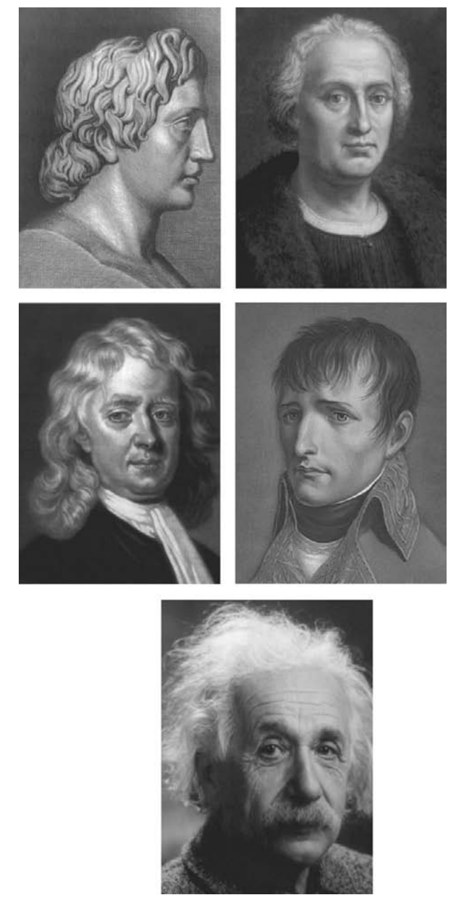
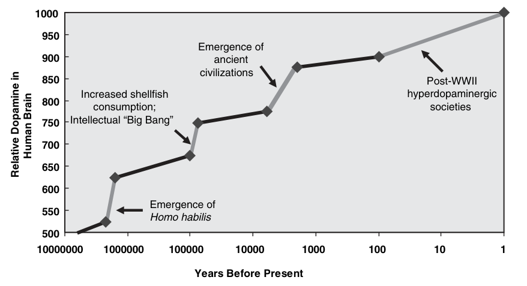

Chương 6 — Tâm trí dopamine trong lịch sử
6 Tâm trí dopaminergic trong lịch sử
Nếu một người tin rằng sự tiến hóa của loài người – đặc biệt là ở các khía cạnh trí tuệ – không phụ thuộc hoàn toàn hay thậm chí phần lớn vào kích thước não bộ và sự di truyền gen, thì sự tiến hóa của loài người chưa bao giờ ngừng lại. Do đó, sẽ là sai lầm nếu cho rằng tất cả con người và các xã hội hiện đại về mặt di truyền đều có cùng một nền tảng hóa học thần kinh, và vì thế có cùng khả năng trí tuệ, tính cách, mục tiêu cũng như khuynh hướng mắc các rối loạn tâm thần. Cụ thể hơn, có lý do để tin rằng mức dopamine ở các thành viên của những xã hội công nghiệp hóa hiện đại ngày nay cao hơn nhiều so với ở các xã hội nguyên thủy hơn. Chương này sẽ tập trung vào hai kỷ nguyên lịch sử lớn – sự chuyển đổi từ các xã hội săn bắt-hái lượm sang các nền văn minh cổ đại và sự mở rộng mạnh mẽ của ý thức và lối sống dopaminergic trong thế kỷ XX. Khi làm như vậy, chương này sẽ làm nổi bật vai trò của những cá nhân có ảnh hưởng trong lịch sử, những người đã thể hiện các đặc điểm và hành vi dopaminergic và đóng vai trò quan trọng trong việc định hình thế giới dopaminergic hiện đại của chúng ta.
6.1 Sự chuyển đổi sang xã hội dopaminergic
Bất chấp một mức độ thành thạo kỹ thuật nhất định, người Neanderthal và thậm chí cả con người hiện đại trong 100.000 năm đầu tiên dường như đã thiếu khả năng sáng tạo và năng lực tư duy “ngoại tuyến” (off-line) phổ biến như ở con người sau này. Một khi “Vụ nổ lớn” văn hóa thời tiền sử tiến triển đến những giai đoạn cuối cùng và Kỷ Băng Hà lớn cuối cùng bắt đầu rút đi khoảng 20.000 năm trước, sự tiến hóa trí tuệ đã diễn ra với tốc độ nhanh chóng, dường như chỉ mất một khoảnh khắc từ Thời đại Đồ đá mới và sự khởi đầu của nông nghiệp đến các nền văn minh cổ đại và các Thời đại Đồ đồng đỏ, Đồ đồng thau và Đồ sắt. Đan xen với những giai đoạn trì trệ và tuyệt vọng nhất thời, những tiến bộ văn hóa dưới hình thức văn học, toán học, bộ luật, hàng hải, kỹ thuật và kiến trúc đã phát triển đều đặn qua nhiều thiên niên kỷ và ở nhiều nơi trên thế giới, thường độc lập với nhau. Cuối cùng, sự tích lũy dần dần của tri thức và thương mại đã nhường chỗ cho thời kỳ Phục Hưng ở châu Âu, đặt nền móng cho sự mở rộng cuối cùng của tâm trí dopaminergic. Tuy nhiên, phải đến nửa sau của thế kỷ XX, tâm trí dopaminergic mới đạt đến trạng thái tột đỉnh của nó. Bằng chứng về trạng thái dopaminergic tăng cao trong thế kỷ XX này được tìm thấy ở sự gia tăng nhanh chóng của trí thông minh được trung gian bởi dopamine và những tiến bộ công nghệ (Dickens và Flynn, 2001), cũng như ở hàng loạt các rối loạn tâm thần siêu dopaminergic. Không giống như những lần gia tăng mức dopamine trước đó, không có sự thích nghi môi trường hay thay đổi chế độ ăn uống lớn nào gắn liền với sự gia tăng dopaminergic kể từ thời tiền sử. Thay vào đó, phần lớn sự gia tăng dopamine xảy ra là vì mức dopamine cao hơn đã trở nên cực kỳ thích nghi đối với các cá nhân trong việc sinh tồn và phát đạt trong các hệ thống kinh tế - xã hội ngày càng phân tầng, phức tạp và cạnh tranh nổi lên trong suốt lịch sử loài người.
Có lẽ sẽ rất hữu ích khi điểm lại ngắn gọn xem các xã hội săn bắt-hái lượm sơ khai nhất hẳn đã khác biệt như thế nào so với các xã hội công nghiệp và hậu công nghiệp hiện tại của chúng ta. Người ta đã ghi nhận nhiều lần rằng những người săn bắt-hái lượm ngày nay chỉ làm việc tối đa khoảng 20–30 giờ mỗi tuần, và mất rất ít thời gian cho việc đi lại. Mặc dù một số tác giả cho rằng những người săn bắt-hái lượm cấu thành nên cái mà Sahlin gọi là “xã hội sung túc nguyên thủy” (Sahlin, 1972; Taylor, 2005), lượng thời gian nhàn rỗi của họ có lẽ đã bị phóng đại phần nào, ít nhất là trong trường hợp của phụ nữ (Caldwell và Caldwell, 2003; Hawkes và O’Connell, 1981). Tuy nhiên, thay vì thức dậy một cách cưỡng ép vào một giờ nhất định để bắt đầu mỗi ngày làm việc – hoặc liên tục lo lắng về tương lai – công việc dường như được thực hiện một cách ngẫu hứng hơn và có “định hướng hiện tại” lớn hơn nhiều. Công việc cũng được thực hiện như một hoạt động cộng đồng, việc chia sẻ tài nguyên là chuẩn mực (Taylor, 2005), và phần lớn thời gian nhàn rỗi cũng được dành cho các hoạt động cộng đồng như trò chơi và âm nhạc (Sahlin, 1972), trong đó âm nhạc được cho là xuất hiện chủ yếu như một hoạt động nhằm thúc đẩy sự gắn kết tình cảm - xã hội (Brown, 2000). Ngay cả cuộc sống nông nghiệp cũng bị nhiều người săn bắt-hái lượm coi là quá đòi hỏi; nếu được lựa chọn, họ thích cuộc sống săn bắt-hái lượm đơn giản hơn, vốn hầu như không có tài sản vật chất (Sahlin, 1972). Thật vậy, những phần thưởng vật chất không liên quan đến việc tiêu thụ ngay lập tức (tức là các phần thưởng thứ cấp) có giá trị hạn chế trong các xã hội này, vì chúng chỉ tạo ra các vấn đề hậu cần do việc thường xuyên phải di chuyển đến các địa điểm mới theo lối sống du mục. Mức tiêu thụ năng lượng bình quân đầu người của người săn bắt-hái lượm được ước tính là 3.000 calo mỗi ngày, tức là chưa đến 1% so với con người hiện đại, những người có nhu cầu rất lớn về giao thông vận tải và điện năng (Clark, 1989: 102). Và, những người săn bắt-hái lượm phần lớn không mắc phải các bệnh tật và dịch bệnh gắn liền với đời sống đô thị, chẳng hạn như sởi, cúm, dịch hạch, đậu mùa, v.v. Tất nhiên, hẳn đã có nhiều căn bệnh đặc hữu ở những người săn bắt-hái lượm thời tiền sử, và tuổi thọ trung bình chung của họ được ước tính chỉ là 21 năm (Acsadi và Nemeskeri, được trích dẫn trong Caldwell và Caldwell, 2003), thấp hơn đáng kể so với những người săn bắt-hái lượm hiện nay (~30–35 năm), những người có công cụ tốt hơn nhiều và có tham gia trồng trọt ở mức độ hạn chế (Arsuaga, 2003).
Taylor (2005) và những người khác đã xem xét các bằng chứng cho thấy các xã hội săn bắt-hái lượm sơ khai tương đối phi bạo lực và rất cởi mở về mặt tình dục, phù hợp với tỷ lệ mắc các bệnh lây truyền qua đường tình dục cao ở những người săn bắt-hái lượm hiện nay như người !Kung San (Caldwell và Caldwell, 2003). Chắc chắn không có quân đội thường trực nào trong số những người săn bắt-hái lượm, vì họ sống thành từng nhóm nhỏ, và nhiều nhóm trong số họ chắc chắn rất hòa bình, dựa trên các tác phẩm nghệ thuật, hài cốt của họ, và thực tế là nhiều xã hội săn bắt-hái lượm ngày nay về cơ bản là phi bạo lực (Taylor, 2005). Nhưng, chắc chắn cũng có bằng chứng về các cuộc đụng độ bạo lực liên quan đến nhiều nhóm tiền sử, chẳng hạn như người Carib và người Yanomamo ở Nam Mỹ, và tới 25% số ca tử vong ở nam giới trưởng thành thời tiền sử được quy cho bạo lực (Coleman, được trích dẫn trong Caldwell và Caldwell, 2003). Người ta thường đồng ý rằng các xã hội săn bắt-hái lượm thời tiền sử bình đẳng hơn nhiều so với các xã hội nông nghiệp tiếp theo sau đó, với phụ nữ và nam giới cùng chia sẻ việc nuôi dạy con cái và công việc, và hầu hết các xã hội này – cũng như một số lượng lớn các xã hội còn sót lại – có lẽ đã có hệ thống mẫu hệ. Các hệ thống tôn giáo của họ hầu như không nhấn mạnh đến các vị thần xa xôi, siêu thế tục hay tối cao (ví dụ: “các vị thần bầu trời”) mà thay vào đó cầu khẩn các linh hồn tự nhiên và tổ tiên. Cuối cùng, các dân tộc tiền sử có xu hướng sống hòa mình vào thiên nhiên hơn so với hậu duệ làm nông nghiệp của họ. Điều này không có nghĩa là họ là những thiên thần môi trường – xét cho cùng, nhiều loài (nếu không muốn nói là hầu hết) động vật có vú lớn và thú có túi bên ngoài châu Phi và châu Á đã biến mất trước buổi bình minh của nông nghiệp, và tập quán đốt phá của các xã hội tiền sử đã góp phần gây ra nạn phá rừng và xói mòn ở nhiều nơi trên thế giới (Roszak, được trích dẫn trong Taylor, 2005).
Khi Trái Đất bắt đầu ấm lên đáng kể vào khoảng 20.000 năm trước, lối sống săn bắt-hái lượm cuối cùng đã nhường chỗ cho sự phát triển của trồng trọt nguyên thủy (ví dụ: gieo hạt các loại ngũ cốc hoang dã và cây ăn quả) và chăn thả du mục có lẽ bắt đầu cách đây 10.000–15.000 năm khi áp lực dân số làm giảm nguồn cung cấp các loài thú săn lớn ở Tây Nam Á (Arsuaga, 2003; Clark, 1989; Weiss và Bradley, 2001). Sự pha trộn giữa săn bắt và hái lượm, chăn thả di cư và trồng trọt cuối cùng đã được thay thế bằng sự phụ thuộc nhiều hơn vào việc canh tác đất đai và sự phát triển của các khu định cư nông nghiệp cố định vào khoảng 10.000 năm trước, điều này dẫn đến sự gia tăng mức tiêu thụ năng lượng lên ~15.000 calo mỗi ngày. Người ta tin rằng tuổi thọ của người làm nông nghiệp ban đầu có thể đã giảm nhẹ (Clark, 1989; Taylor, 2005), vì việc sống định cư khép kín hơn khiến con người tiếp xúc nhiều hơn với các dịch bệnh và bệnh tật từ động vật. Tuy nhiên, cũng có bằng chứng cho thấy dân số loài người có thể đã mở rộng nhanh hơn trước đây, điều này chỉ ra rằng chế độ ăn uống được cải thiện có thể đã làm tăng khả năng sinh sản và bù đắp cho tỷ lệ tử vong cao hơn (Caldwell và Caldwell, 2003).
Với sự ra đời của nông nghiệp, mối quan hệ tâm lý với thiên nhiên đã bị biến đổi mạnh mẽ – thay vì sống cùng thiên nhiên, các xã hội nông nghiệp tận tâm vào việc biến đổi (kiểm soát) thiên nhiên thông qua canh tác, thủy lợi, thu hoạch, v.v. Không giống như những người săn bắt-hái lượm, vốn có ít tài sản cố định và có thể dễ dàng thay đổi chế độ ăn uống trong thời kỳ hạn hán và/hoặc di cư, các xã hội nông nghiệp dựa trên một nền kinh tế và lối sống định cư hơn và mang tính chu kỳ, phụ thuộc vào việc lưu trữ (tích trữ) và dự đoán thời tiết theo mùa để gieo trồng và thu hoạch (Clark, 1989). Cả việc tích trữ và dự đoán đều đòi hỏi một định hướng lớn hơn hướng tới các sự kiện tương lai, vốn là dấu ấn đặc trưng của nhân cách dopaminergic (xem Chương 3); thật vậy, tích trữ là một triệu chứng ám ảnh cưỡng chế kinh điển và phụ thuộc vào sự toàn vẹn của các hệ thống dopaminergic (Kalsbeek và cộng sự, 1988). Sự nhạy cảm lớn hơn đối với các chu kỳ mặt trăng và mặt trời cũng dẫn đến sự mở rộng cảm nhận về không gian phía trên được trung gian bởi dopamine, và các biểu tượng tôn giáo siêu thế tục (tức là các vị thần bầu trời) bắt đầu thay thế các hình tượng động vật và con người thần thoại vốn cấu thành nên những biểu tượng tôn giáo đầu tiên.
Đời sống nông nghiệp đã dẫn đến sự xuất hiện của một số “tiền văn minh” ở khu vực mà Taylor (2005) gọi là Saharasia, một dải lãnh thổ rộng lớn kéo dài từ Bắc Phi đến sông Ấn. Trong vài nghìn năm đầu tiên sau khi nông nghiệp khởi phát, Trái Đất ấm lên và các sông băng tan chảy đã tạo ra lượng mưa ở vùng rộng lớn này hầu như đủ để nuôi dưỡng những thảo nguyên rộng lớn và thậm chí cả rừng ở các vùng đất cao hơn. Thức ăn dồi dào, các khu định cư không quá đông đúc – có lẽ chỉ từ một trăm đến vài nghìn người ở những nơi lớn hơn – và các xã hội nhìn chung hòa bình và bình đẳng (hầu hết các ngôi nhà đều có cùng kiểu dáng và kích thước cơ bản). Các nữ thần Trái Đất và các nữ tu sĩ giữ vị trí nổi bật trong các nền văn minh sơ khai, và hành vi tình dục vẫn còn tương đối cởi mở.
Tuy nhiên, theo lời kể của Taylor (2005), nhiệt độ toàn cầu tiếp tục tăng và những sông băng cuối cùng còn sót lại trong khu vực bắt đầu tan chảy. Cùng với việc chăn thả quá mức và các tập quán nông nghiệp tàn phá khác, biến đổi khí hậu toàn cầu đã khiến những vùng rộng lớn của Saharasia bị khô hạn, và sự cạnh tranh ngày càng tăng đối với tài nguyên đã nảy sinh. Cách đây 6.000 năm, các thành phố đã phát triển lớn hơn, sự phân tầng xã hội gia tăng, chiến tranh đột ngột bùng nổ trên quy mô lớn, và các giá trị nam tính bắt đầu chiếm ưu thế.
Cuộc chiến tranh liên miên diễn ra mang tính trí tuệ hóa hơn, vô nghĩa hơn và đáng lo ngại hơn so với thời tiền sử, vì nó thường là màn phô trương quyền lực hoang tưởng tự đại của các nhà cai trị và thường xuyên đi kèm với việc cắt xẻo thân thể và tra tấn (Wilson, 1985). Các tôn giáo tự nhiên bị thay thế bởi các tôn giáo thứ bậc siêu thế tục, trong đó hầu hết các nam thần và nam tu sĩ thống trị tối cao, và một thái độ khác đối với thiên nhiên đã xuất hiện (thống trị thay vì chung sống). Những thành tựu công nghệ trong Thời đại Đồ đồng thau và Đồ sắt diễn ra với tốc độ đáng kinh ngạc, một phần (hoặc thậm chí phần lớn) được thúc đẩy bởi nhu cầu về vũ khí và áo giáp tốt hơn; thật vậy, năng lực công nghệ của các nền văn minh cổ đại vĩ đại đến mức một số sản phẩm của họ – đáng chú ý là Cơ chế Antikythera nổi tiếng, một máy tính thiên văn được làm từ ba mươi bánh răng – tinh vi hơn bất cứ thứ gì được sản xuất trong 1.000 năm tiếp theo (Charette, 2006). Đời sống hàng ngày trở nên mang tính “mệnh đề” (propositional) hơn nhiều – tức là được điều chỉnh bởi các bộ luật phức tạp, trừu tượng và các văn bản giao tiếp. Một thái độ tiêu cực hơn đối với thiên nhiên, các biểu tượng mẫu hệ của thiên nhiên và chính cơ thể con người đã xuất hiện, và sự cởi mở tình dục cũng như tình trạng khỏa thân một phần đã bị thay thế bằng việc che đậy cơ thể và vô số điều cấm đoán về tình dục. Địa vị được tôn vinh của các chiến binh nam giới và sự tập trung của cải trong các xã hội phân tầng hơn nhiều cuối cùng đã dẫn đến việc thay thế chế độ thừa kế và huyết thống mẫu hệ bằng huyết thống và thừa kế phụ hệ, điều này có thể đã hạn chế hơn nữa tự do tình dục của phụ nữ.1 Các cư dân của Trung Á và Tây Nam Á có thể là những người đầu tiên thể hiện những thái độ và lối sống mới này, nhưng các nền văn minh khác sớm noi theo và các thành bang có pháo đài lớn đã được xây dựng khắp khu vực này và thậm chí ở một số vùng của châu Âu, châu Phi và Đông Á. Phần đau đớn nhất của sự biến đổi môi trường xảy ra ngay sau khi kết thúc đợt dâng cao mực nước biển hậu băng hà dữ dội được gọi là Biển tiến Flandrian (Flandrian Transgression), trong đó một đợt hạn hán trên toàn thế giới với quy mô gần như không thể tưởng tượng nổi từ năm 2300 đến năm 2000 TCN đã dẫn đến sự sụp đổ của nhiều nền văn minh trên khắp thế giới và sự xuất hiện của những quần thể người tị nạn lớn (Bowen, 2005; Weiss và Bradley, 2001). Đến năm 1500 TCN, một trong những nền văn minh Saharasia sơ khai cuối cùng còn tương đối bình đẳng, hòa bình và cởi mở (nền văn minh Minoa ở đảo Crete) đã bị người Mycenae hiếu chiến hơn chinh phục.
1 Như đã được Primavesi (1991) tổng quan, sự đồng xuất hiện của quyền thống trị nam giới và của cải tài sản đã tạo ra nhu cầu về một huyết thống phụ hệ nghiêm ngặt mà tất yếu phải hạn chế tự do tình dục của phụ nữ. Không giống như trong xã hội mẫu hệ, nơi huyết thống hiển nhiên ngay từ khi sinh ra, huyết thống phụ hệ chỉ có thể được suy đoán nếu hành vi tình dục của phụ nữ bị giới hạn độc quyền với người chồng.
Sự chuyển đổi kịch tính của đời sống con người sang một trạng thái cạnh tranh hơn nhiều, bất bình đẳng và công nghệ hóa một cách tàn nhẫn đã được Taylor (2005) gọi là “Sự Sa Ngã” (The Fall), và nó có thể là cơ sở cho câu chuyện Kinh Thánh về Adam và Eve.2 Nó cũng gắn liền với một sự thay đổi lớn trong ý thức của con người. Con người trước kỷ nguyên này tự coi mình được bao quanh, kiểm soát và thậm chí được giúp đỡ bởi nhiều vị thần khác nhau; thật vậy, những gì ngày nay có thể bị coi là triệu chứng bệnh lý như ảo giác và hoang tưởng bị kiểm soát (hội chứng “sự kiểm soát từ bên ngoài”) thực ra có thể đã khá phổ biến và được chấp nhận trong thời gian này (Jaynes, 1976). Tuy nhiên, ý thức mới lại định vị con người như những tác nhân độc lập, tự nhận thức, và các vị thần mà họ từng đặt niềm tin lớn lao nhưng đã không thể ngăn chặn nhiều thế kỷ thảm họa thiên nhiên đã trở nên xa cách hơn và ít can dự vào việc kiểm soát suy nghĩ và hành động của họ hơn (Jaynes, 1976). Nhiều nhà lý thuyết, bao gồm Jaynes (1976), Taylor (2005) và Wilson (1985), đã lập luận rằng kỷ nguyên này đại diện cho sự khởi đầu của ưu thế bán cầu não trái, những suy nghĩ nội tâm, sự bùng nổ của bản ngã, sự hung hăng nam tính, tính siêu thế tục, góc nhìn thời gian tuyến tính và tư duy công nghệ. Chắc chắn những đặc điểm này đặc trưng hơn cho bán cầu não trái, nhưng không có bằng chứng thực tế nào cho thấy sự chuyên biệt hóa bên (lateralization) về mặt giải phẫu hay chức năng của chúng ta đã bị thay đổi trong thời kỳ này. Thay vào đó, điều đã xảy ra là sự gia tăng mạnh mẽ của tâm trí dopaminergic, vốn được điển hình hóa bởi nhận thức tiên tiến, động lực cạnh tranh, phong cách nam tính, sự tập trung vào các mục tiêu và không gian xa xôi (tương lai), và sự kiểm soát đối với thiên nhiên cũng như người khác (“tính hướng ngoại chủ động” - agentic extraversion), tất cả đều phải trả giá bằng sự đồng cảm đối với người khác và việc duy trì bản ngã cảm xúc. Tâm trí dopaminergic đơn thuần chỉ ngụy trang dưới dạng sự gia tăng ưu thế bán cầu não trái bởi vì hàm lượng dopamine cao hơn của bán cầu não trái khiến nó trở nên tiêu biểu nhất cho tâm trí đó nói chung. Hơn nữa, hệ thống dopaminergic bên có thể là phần của bộ não/tâm trí dopaminergic gia tăng nhiều nhất, bởi vì sự kiểm soát nội tại, sức mạnh bản ngã, sự trừu tượng hóa công nghệ và sự suy giảm của những suy nghĩ từ bên ngoài (ảo giác)
2 Cũng giống như nền văn minh vĩ đại đầu tiên (người Sumer) nổi lên ở Lưỡng Hà (nay là miền Nam Iraq), Vườn Địa Đàng cũng có thể được lần dấu về cùng một vị trí chung này (Hamblin, 1987) và cùng khung thời gian (4000–5000 TCN). Ở Địa Đàng, Adam và Eve (người được cho là hình thành từ xương sườn của Adam theo thần thoại Sumer) sống trong một khu rừng rậm rạp (vốn hiện diện ở nhiều nơi tại Trung Đông cách đây 6.000–8.000 năm) và sống không chút xấu hổ về cơ thể mình (sự cởi mở tình dục), và trong trạng thái mù mờ về công nghệ. Nhưng, sau khi bất tuân Thượng Đế, Adam và Eve đã có được tri thức, sự xấu hổ về cơ thể mình, và bị đuổi khỏi Địa Đàng tươi tốt để vào sa mạc (vốn bắt đầu mở rộng vào khoảng cùng thời gian này), và lần đầu tiên lòng tham cùng bạo lực đã xuất hiện ở con cháu của họ.
– tất cả những điều bắt đầu thống trị ý thức con người vào thời điểm này – là đặc trưng nhất của hệ thống bên (xem Chương 3).3
Không giống như những lần mở rộng trước đây của tâm trí dopaminergic, lần này không phải do sự tiến hóa di truyền, thích nghi sinh lý hay chế độ ăn uống biến đổi. Mặc dù kích thước não bộ ở con người hiện đại về mặt di truyền có giảm nhẹ xuống còn 1.350 cc, nó đã ổn định trước khi các tiền văn minh trỗi dậy, và sự biến thiên di truyền giữa những người còn tồn tại là cực kỳ thấp, chỉ ~0,1% (Carroll, 2003). Hơn nữa, thực tế là các xã hội phụ hệ, phân tầng, hạn chế tình dục, hiếu chiến với các vị thần bầu trời, tầng lớp tu sĩ và năng lực công nghệ trình độ cao đã xuất hiện ở các nền văn minh khác trên khắp thế giới (ví dụ: người Aztec ở Mexico, người Maya ở Trung Mỹ, người Inca ở Nam Mỹ và người Trung Hoa ở Đông Á) cho thấy rằng chính sự xuất hiện của các xã hội cạnh tranh và phân tầng là nguyên nhân chủ yếu buộc mức dopamine ở các thành viên cá thể phải tăng cao.
Sự thay đổi ý thức con người vào cuối Thời đại Đồ đá mới gắn liền với sự trỗi dậy của các xã hội dopaminergic đầu tiên sẽ không phải là lần cuối cùng trong lịch sử mà chính con người tự thay đổi hóa học thần kinh của mình và truyền lại nó cho con cháu. Được dẫn dắt bởi những người đàn ông có tâm trí dopaminergic cao, loài người tiếp tục mở rộng sự tinh vi về công nghệ và khoa học ở mọi nơi trên thế giới – và đặc biệt là ở châu Âu, Trung Đông và Đông Á. Bắt đầu từ thời kỳ Phục Hưng ở châu Âu và kỷ nguyên của những nhà thám hiểm vĩ đại rồi tăng tốc vào thế kỷ XX, tâm trí dopaminergic đã bước vào một giai đoạn mới và cuối cùng đi đến sự chín muồi hoàn toàn (và có thể nói là quá chín) của nó.
Trong phần tiếp theo, tôi sẽ xem xét cách các đặc điểm dopaminergic ở một số nhân vật hàng đầu (dù đầy khiếm khuyết) trong lịch sử hiện đại đã dẫn dắt họ đến những thành tựu vĩ đại góp phần định hình thế giới hiện đại, trước khi kết thúc bằng một cuộc thảo luận ngắn gọn về xã hội siêu dopaminergic hiện đại.
3 Một luận điểm trung tâm của Jaynes (1976), dựa trên phân tích hồ sơ văn hóa và văn học từ các nền văn minh cổ đại, là từ năm 2500 TCN đến năm 1500 TCN, những suy nghĩ nội tâm của con người vốn từng được quy cho các tiếng nói bên ngoài (ví dụ: các vị thần), theo cách rất giống với ảo giác của những người mắc bệnh tâm thần phân liệt, đã bắt đầu được quy nhiều hơn cho tiếng nói của ý thức nội tâm. Ngoài ra, như được chứng minh trong sử thi Odyssey của Homer, con người ngày càng bắt đầu được khắc họa là người làm chủ suy nghĩ và hành động của chính mình, và có nhiều tài liệu văn học với ý nghĩa trừu tượng hơn (ví dụ: các danh từ kết thúc bằng “ness”) và hàm ý thời gian cụ thể hơn (ví dụ: “do dự”). Như đã lưu ý ở Chương 4, có bằng chứng đáng kể cho thấy sự kiểm soát ức chế của hệ thống dopaminergic bên đối với các phần dưới vỏ của hệ thống dopaminergic giữa bị suy yếu trong bệnh tâm thần phân liệt, từ đó dẫn đến việc lời nói nội tâm ở bán cầu não trái bị cảm nhận như là ảo thanh.
6.2 Vai trò của các nhân cách dopaminergic trong lịch sử loài người
Sự tiến hóa từ các xã hội săn bắt-hái lượm và nông nghiệp sang các xã hội công nghiệp hóa hiện tại của chúng ta chỉ diễn ra trong một hạt bụi của thời gian địa chất và thậm chí là thời gian sinh học. Tuy nhiên, nó không xảy ra chỉ sau một đêm, và nó cũng không nhất thiết xảy ra một cách tình cờ. Thay vào đó, các xã hội loài người trong 4.000 năm qua hầu như luôn được dẫn dắt hoặc chịu ảnh hưởng bởi những cá nhân thống trị dưới hình thức các nhà cai trị quân sự, lãnh đạo tôn giáo, nhà thám hiểm và nhà khoa học. Những cá nhân có tính dopaminergic cao có thể nằm trong số khoảng 2% những người đạt thành tựu cao được Toffler (1970) mô tả, những người dường như thích nghi rất tốt với môi trường của các xã hội hiện đại và trong hầu hết các trường hợp là những nhà lãnh đạo của nó. Tuy nhiên, ngay cả những cá nhân cực kỳ thành công cũng có thể dễ mắc các hội chứng siêu dopaminergic như hưng cảm nhẹ (Goodwin và Jamison, 1990) và các rối loạn phổ ám ảnh cưỡng chế như nghiện công việc, chấp nhận rủi ro quá mức và nghiện tình dục, và những cá nhân này cũng có thể thuộc về các gia đình mà trong đó các rối loạn siêu dopaminergic rất phổ biến (Karlsson, 1974). Cũng thật thú vị khi lưu ý về khía cạnh này rằng những người nổi tiếng, giống như những người mắc bệnh tâm thần phân liệt và rối loạn lưỡng cực, có nhiều khả năng sinh vào các tháng mùa đông hơn (Kaulins, 1979), có thể là do mức dopamine của người mẹ tăng cao trong các tháng mùa hè vì nhiệt độ cao hơn và thời gian ban ngày dài hơn (xem Chương 4).4
Thực tế là hầu như tất cả các cá nhân nổi tiếng trong lịch sử trước thế kỷ XX đều là nam giới hoàn toàn phù hợp với câu nói nổi tiếng của Carlyle rằng “Lịch sử thế giới chẳng qua chỉ là tiểu sử của những vĩ nhân.”5
Hiện tượng này ít nhất một phần phản ánh sự thống trị và ngưỡng mộ nói chung đối với các đặc điểm nam tính trong các xã hội loài người kể từ Thời đại Đồ đồng thau. Nhưng, hầu hết các nhân vật lịch sử nổi tiếng không chỉ là nam giới mà còn rất trẻ tuổi ( 4 Kaulins (1979) đã ghi lại ngày sinh của 11.439 người nổi tiếng được liệt kê trong ấn bản năm 1974 của Bách khoa toàn thư Britannica. Trên tất cả các lĩnh vực, có mức tăng 18% số ca sinh vào tháng Giêng và tháng Hai so với số ca sinh vào tháng Bảy và tháng Tám. Trong số ba mươi mốt lĩnh vực được Kaulins phân loại, hai mươi ba lĩnh vực cho thấy xu hướng sinh vào mùa đông vượt trội. (Thực ra Kaulins có ba mươi ba hạng mục, nhưng hai trong số đó chỉ có một người trong mỗi mùa.) Xem www.lexiline.com/lexiline/lexi118.htm. 5 www.brainyquote.com/quotes/quotes/t/thomascarl143133.htm. 6 Trong số năm cá nhân được xem xét trong chương này, ngoại lệ duy nhất đối với điều này là Columbus, người đã khoảng bốn mươi mốt tuổi vào thời điểm thực hiện chuyến hải hành đầu tiên tới Tây Bán Cầu. Tuy nhiên, đơn thỉnh cầu chính thức đầu tiên của ông để đi thuyền về phía tây tới Đông Ấn đã được thực hiện mười một năm trước đó, và giấc mơ đi thuyền về phía tây tới vinh quang của ông có lẽ đã bắt đầu từ rất lâu trước đó nữa. các thiên tài nhìn chung đạt năng suất cao nhất vào khoảng bốn mươi tuổi, mặc dù điều này còn phụ thuộc phần nào vào: 1. từng ngành nghề cụ thể, theo đó các nhà toán học, nhà vật lý và nghệ sĩ có xu hướng đạt đỉnh cao trẻ hơn các nhà khoa học y khoa và xã hội; 2. tuổi thọ trung bình, vì cho đến thế kỷ XX, tuổi qua đời của những người trưởng thành sống sót là dưới năm mươi lăm tuổi, điều này thúc đẩy sản lượng ở độ tuổi trung bình trẻ hơn; và 3. độ chín muồi của một lĩnh vực nỗ lực. Yếu tố cuối cùng có thể đang làm tăng độ tuổi đạt đỉnh cao năng suất trong các xã hội hiện đại, vì ngày nay cần ít nhất mười năm kinh nghiệm trong hầu hết các lĩnh vực để thực hiện công việc tốt nhất của một người (Simonton, 1994) và vì hầu hết các nhà khoa học ngày nay có quá nhiều thứ phải học đến nỗi họ vẫn đang tham gia nghiên cứu sau tiến sĩ ngay cả khi đã bước sang đầu tuổi ba mươi. Mặt khác, nhiều đột phá sáng tạo dẫn đến những thành tựu quan trọng sau này trong cuộc đời được biết là đã xảy ra sớm hơn nhiều trong cuộc đời của người đó, vì vậy độ tuổi đạt đỉnh cao sáng tạo chắc chắn trẻ hơn độ tuổi đạt đỉnh cao năng suất. Gần đây có lập luận cho rằng, dù tốt (ví dụ: khoa học) hay xấu (ví dụ: hoạt động tội phạm), những thành tựu vĩ đại của nam giới xảy ra sớm ở tuổi trưởng thành là do nồng độ testosterone cao và nhu cầu của nam giới trong việc thu hút các bạn tình nữ hấp dẫn (Kanazawa, 2003). Quả thực có thể có mối liên hệ với testosterone – cũng như những nguyên nhân trần tục hơn như trách nhiệm gia đình và các trách nhiệm khác lớn hơn, sức khỏe kém hơn và mức năng lượng giảm sút làm giảm năng suất ở tuổi trung niên – nhưng mối liên hệ với testosterone có thể không trực tiếp như ngụ ý. Testosterone làm tăng ham muốn tình dục ở nam giới, nhưng nó cũng làm tăng mức dopamine trong não, điều này đến lượt nó lại làm tăng tính hung hăng, tính ám ảnh và hành vi tình dục ở nam giới. Như đã thảo luận trước đây ở Chương 4, mối liên hệ testosterone–dopamine giải thích tại sao nam giới có nhiều khả năng phát triển các rối loạn siêu dopaminergic như rối loạn ám ảnh cưỡng chế, hưng cảm và tâm thần phân liệt ở đầu tuổi trưởng thành. Do đó, sự suy giảm tính sáng tạo và thành tựu ở nam giới theo tuổi tác hoàn toàn phù hợp với sự suy giảm mức dopamine trong quá trình lão hóa (Braver và Barch, 2002; Volkow và cộng sự, 1998). Các nhân vật lịch sử vĩ đại không thể chỉ bị coi là bị ám ảnh, hung hăng và cuồng dâm, mặc dù nhiều người trong số họ rõ ràng rất bừa bãi về mặt tình dục (Alias, 2000), bao gồm một số lượng đáng ngạc nhiên các nhà vật lý vĩ đại như Albert Einstein và Richard Feynman. Điều mà hầu hết những người đàn ông nổi tiếng này thực sự sở hữu là trí thông minh tuyệt vời, dung lượng trí nhớ làm việc vượt trội và tầm nhìn chiến lược sắc bén (tức là “nhìn xa trông rộng”), phù hợp với sự chú trọng của dopamine vào không gian xa xôi và thời gian tương lai. Những đặc điểm trí tuệ này đi kèm với cảm giác về định mệnh cá nhân (thậm chí là mang tính tôn giáo) cùng sự bồn chồn không yên và tham vọng khám phá hoặc chinh phục những thế giới mới và/hoặc thúc đẩy những ý tưởng mới. Về mặt tiêu cực, nhiều người (nếu không muốn nói là hầu hết) trong số những người đàn ông này đều lạnh lùng về mặt cảm xúc, có phần hoang tưởng và dễ có các đặc điểm dopaminergic khác như chấp nhận rủi ro quá mức. Có hàng tá những người đàn ông mang tính dopaminergic cao có ý nghĩa lịch sử có thể được nêu bật trong chương này vì trí nhớ làm việc khổng lồ, sự tập trung tinh thần đáng kinh ngạc và tính hướng mục tiêu mạnh mẽ của họ (xem Alias, 2000; Simonton, 1994). Những người duy nhất được làm nổi bật ở đây sẽ là người phương Tây, một phần do thiên kiến của tôi. Tôi bỏ qua việc thảo luận về hai trong số những nhà lãnh đạo khét tiếng nhất của lịch sử hiện đại (Adolf Hitler và Josef Stalin), không phải vì họ thiếu dopamine – khuynh hướng lâm sàng của họ đối với rối loạn lưỡng cực và chứng hoang tưởng chứng minh điều ngược lại – mà bởi vì những “thành tựu” tiêu cực của họ (có thể coi là những kẻ giết người hàng loạt vĩ đại nhất trong lịch sử) làm lu mờ những thành tựu tích cực của họ. Tôi cũng không nêu bật bất kỳ nhân vật tôn giáo nào, một lần nữa không phải vì họ thiếu bộ não dopaminergic cao – ngược lại, những thôi thúc và trải nghiệm tôn giáo gắn liền rất chặt chẽ với mức dopamine cao (Previc, 2006) – mà đúng hơn là vì những đóng góp của họ ít phù hợp hơn cho phân tích lịch sử khách quan do vị thế tôn giáo được nhìn nhận của họ và, trong nhiều trường hợp, do thiếu các ghi chép đương thời và có giá trị lịch sử. Để minh họa cho vai trò của tâm trí dopaminergic trong lịch sử, tôi đã chọn điểm qua ngắn gọn năm nhân vật có thể coi là nằm trong số những người có ảnh hưởng nhất trong lịch sử – Alexander Đại đế, Christopher Columbus, Isaac Newton, Napoleon Bonaparte và Albert Einstein (xem Hình 6.1). Hai trong số này xếp vào hàng những nhà lãnh đạo quân sự vĩ đại nhất, một người có thể coi là nhà thám hiểm vĩ đại nhất trong lịch sử, và hai người còn lại có thể coi là hai nhà khoa học nổi tiếng nhất mọi thời đại. Trên bất kỳ danh sách vĩ nhân lịch sử nào, tất cả đều sẽ xếp ở thứ hạng cao nhất nhờ những thành tựu của họ. Mặc dù tính cách của họ khác nhau ở nhiều khía cạnh, tất cả họ đều có chung mức độ thông minh cao, cảm giác về định mệnh cá nhân, mối bận tâm về tôn giáo/vũ trụ, sự tập trung (ám ảnh) khổng lồ vào việc đạt được những mục tiêu và cuộc chinh phục tối thượng, sự tách rời cảm xúc mà trong hầu hết các trường hợp dẫn đến sự tàn nhẫn, và tâm lý chấp nhận rủi ro dẫn đến những hậu quả trải dài từ mức chỉ đáng xấu hổ cho đến mức thảm khốc hoàn toàn.7 7 Một số nhân vật “dopaminergic” đáng chú ý khác bao gồm những nhân vật thông minh, phức tạp và mơ hồ về mặt đạo đức (ví dụ: vừa lý tưởng hóa vừa tàn nhẫn) như Julius Caesar, Mustafa Kemal (Ataturk) và Winston Churchill. Một tâm trí dopaminergic hấp dẫn và có ảnh hưởng khác – Howard Hughes – là chủ đề của bộ phim bom tấn Hollywood gần đây The Aviator. Hughes là một phi công và nhà tiên phong điện ảnh lỗi lạc, đầy nhiệt huyết và sáng tạo, người đã trở thành tỷ phú đích thực đầu tiên trên thế giới, nhưng ông cũng bị hành hạ bởi các triệu chứng siêu dopaminergic suy nhược như rối loạn ám ảnh cưỡng chế, máy giật (tics - một đặc điểm của hội chứng Tourette), và những suy nghĩ hoang tưởng và nghi kỵ (nhân cách dạng phân liệt - schizotypy).  Vị vua xứ Macedonia Alexander (356–323 TCN) được xếp hạng, cùng với Thành Cát Tư Hãn, là một trong hai nhà chinh phục vĩ đại nhất trong lịch sử. Nhưng, giống như Thành Cát Tư Hãn, sự vĩ đại của ông không chỉ bắt nguồn từ những chiến thắng quân sự mà còn từ trí tuệ tuyệt vời và tầm nhìn quản trị đế chế của ông, hầu hết trong số đó đã không thành hiện thực do cái chết sớm của ông. Thật không may, di sản của Alexander cũng bị hoen ố bởi sự tàn nhẫn mà tuy chưa sánh được với nhà lãnh đạo Mông Cổ, nhưng vẫn gây sốc theo tiêu chuẩn ngày nay.8 Alexander được nuôi dạy như con trai của Philip, vua xứ Macedonia. Ông có một trí tuệ sắc bén, và một trong những người thầy của ông là Aristotle. Sau khi cha qua đời, ông lên ngôi và nhanh chóng chinh phục các thành bang Hy Lạp khác rồi mở rộng quyền kiểm soát tới Biển Đen, và ông sớm bắt đầu thống nhất người Hy Lạp chống lại đối thủ lớn của họ là người Ba Tư. Mục tiêu ban đầu của ông là trả thù cho cuộc xâm lược trước đó của người Ba Tư vào Hy Lạp và đưa bản thân lên ngai vàng Ba Tư. Ông tấn công và đánh bại Darius tại Issus rồi bao vây thành công toàn bộ khu vực Đông Địa Trung Hải. Ông quay trở lại Ba Tư và chiến đấu một trận quyết định tại Gaugamela, trong đó đội quân Ba Tư đông đảo hơn đã bị đánh bại và kéo theo việc chiếm đóng các thành phố Babylon và Persepolis. Giá như Alexander dừng lại ở thời điểm này, di sản của ông trong lịch sử đã không lớn đến vậy. Alexander, ngay cả trước khi chinh phục lãnh thổ của Darius, đã được đề nghị nhượng lại nửa phía Tây của đế chế Ba Tư, điều mà người bạn kiêm tướng quân Parmenion của ông được cho là đã lập luận “Tôi sẽ chấp nhận lời đề nghị nếu tôi là Alexander,” và Alexander đã đáp lại một cách nổi tiếng rằng “Tôi cũng vậy, nếu tôi là Parmenion.” Alexander cũng không bằng lòng với việc được coi là “vua của người Ba Tư;” thay vào đó, ông muốn trở thành “vua của châu Á” và cuối cùng là “vua của Thế giới.” Ông đặt mục tiêu chinh phục toàn bộ phạm vi của thế giới, mà Aristotle tin rằng trải dài về phía đông tới tận sông Ấn. Quân đội của Alexander đã tiến xa về phía bắc tới tận vùng Samarkand ở Trung Á, vượt qua dãy Hindu Kush trong một chiến dịch đáng kinh ngạc và sau đó tiến sâu về phía nam để vượt qua sông Ấn tại nơi ngày nay là Pakistan. Quân lính của Alexander cuối cùng đã nổi loạn phản đối việc tiến xa hơn, và Alexander rốt cuộc cũng biết rằng ông chưa chinh phục được toàn bộ thế giới ở phía đông Hy Lạp. Nhưng, ông đã xây dựng một đế chế vĩ đại hơn bất kỳ ai trước mình và đã mang lại một sự trao đổi thương mại và văn hóa khổng lồ khi các nền văn hóa châu Á và châu Âu có cuộc chạm trán đáng kể đầu tiên. 8 Phần lớn lời kể này xuất phát từ cuốn Alexander the Great: The Invisible Enemy của O’Brien (1992), The Genius of Alexander the Great của Hammond (1997), và Alexander the Great, một tiểu sử trên web của Jona Lendering (www.livius.org/aj-al/alexander/alexander00.html). Sự vĩ đại của Alexander không chỉ bắt nguồn từ quy mô các cuộc chinh phạt hay sự táo bạo và xuất sắc trong các chiến lược quân sự của ông – thể hiện ở việc đội quân chiến thắng của ông thường bị áp đảo về quân số bởi các đội quân bản địa trong các chiến dịch châu Á – hoặc khả năng thiết lập liên minh của ông. Alexander sở hữu một tầm nhìn lớn lao hơn bất kỳ người đương thời nào của mình, khi ông thực hiện chính sách dung hợp, cả về mặt kinh tế (thông qua thương mại) lẫn mặt xã hội (thông qua hôn nhân dị chủng). Ông là người ủng hộ nhiệt thành nền văn hóa Hy Lạp và đã giúp truyền bá nó rộng khắp châu Á, đồng thời huấn luyện binh lính châu Á từ khi còn trẻ về văn hóa và võ thuật Hy Lạp. Nhưng, ông cũng tiếp thu nhiều yếu tố văn hóa châu Á, để các tổng trấn (satrap) người châu Á điều hành phần lớn đế chế, và thậm chí muốn biến Babylon thành thủ phủ tương lai của đế chế mình. Sự lỗi lạc, tầm nhìn chiến lược và cảm giác mãnh liệt về định mệnh cá nhân của ông phải được coi là một số đặc điểm dopaminergic “tích cực” hơn của ông. Thật không may, di sản của Alexander đã bị vấy bẩn bởi hậu quả từ những đặc điểm dopaminergic tiêu cực hơn của ông. Bất kể những mục đích cao đẹp hơn nào có thể đã truyền cảm hứng cho các cuộc chinh phạt ban đầu của ông đều bị lu mờ bởi sự tàn nhẫn và, trong những năm sau đó, bởi chứng hoang tưởng được rượu tiếp thêm. Một ví dụ về điều này là việc đóng đinh trên bờ biển 2.000 người đàn ông ở Tyre (một thành phố ở miền nam Lebanon), nơi đã kháng cự quân đội của ông trong nhiều tháng trước khi thất thủ. Những ví dụ khác là việc ông phá hủy hoàn toàn Persepolis, điều mà sau này ông phần nào hối tiếc, cuộc tàn sát hàng loạt những người Hy Lạp xa xứ ở Ấn Độ vì một sự vi phạm văn hóa, và những cuộc thanh trừng vô nghĩa đối với các quan chức hành chính sau khi trở về Ba Tư sau chuyến hành quân thảm khốc băng qua Sa mạc Makran, ở nơi ngày nay là miền nam Iran. Sự táo bạo của ông đi kèm với tính bồn chồn và thậm chí là sự bướng bỉnh, điều đã dẫn đến chuyến hành trình Makran thảm khốc, trong đó theo một số tài liệu gần 80% quân đội của ông có thể đã bỏ mạng. Cuối cùng, niềm tin mãnh liệt vào năng lực và định mệnh của bản thân đã bị bù trừ bởi một nét thần bí, hoang tưởng tự đại trong đó ông nuôi dưỡng một hình ảnh gần như thần thánh về chính mình. Là thành viên của hoàng tộc Macedonia, ông có thể tuyên bố một cách hơi “hợp pháp” rằng mình là hậu duệ của các á thần như Hercules và ông có được dòng dõi hoàng gia trong các cuộc chinh phạt (chẳng hạn như trở thành người thừa kế của Ammon ở Ai Cập), nhưng đây chỉ là những mối liên kết mang tính thần thoại và danh nghĩa. Tuy nhiên, chủ nghĩa thần bí của Alexander lại mang hình thức của sự tự thần thánh hóa khoa trương hơn nhiều, điều đã dẫn đến sự chế giễu và thậm chí là một cuộc binh biến cận kề nghiêm trọng của quân đội Macedonia trong một trường hợp, mà ông đã dập tắt bằng cách giả vờ chấp nhận dòng dõi phàm trần của mình trước mặt họ trong một trong những màn kịch bậc thầy hơn của mình. Cái chết sớm của Alexander ở tuổi ba mươi hai đã dẫn đến sự chia cắt nhanh chóng đế chế vật chất của ông, nhưng những sự thống nhất văn hóa do các cuộc chinh phạt của ông mang lại vẫn tiếp tục hàng thế kỷ sau khi ông qua đời và di sản của ông đặc biệt ảnh hưởng đến tâm thức của La Mã cổ đại. Christopher Columbus (“Colon” trong tiếng Tây Ban Nha) (1451–1506) chắc chắn được xếp vào hàng một trong những nhân vật có ảnh hưởng nhất và bí ẩn nhất trong lịch sử.9 Bất chấp cái gọi là “sự khám phá” Tây Bán Cầu của ông – có thể coi là sự kiện vĩ đại nhất trong toàn bộ lịch sử – cuộc đời của Columbus chứa đầy những điều bí ẩn, bao gồm ngày sinh (có lẽ là cuối mùa hè hoặc đầu mùa thu năm 1451), nơi sinh (được chấp nhận rộng rãi nhưng không hoàn toàn là Genoa, Ý), và tôn giáo của ông (hoặc là người Do Thái theo gia đình rồi cải sang Cơ Đốc giáo sau này, hoặc là người theo Cơ Đốc giáo ngoan đạo suốt đời). Tuy nhiên, như Wilford (1991) mô tả, động lực thúc đẩy đằng sau nỗi ám ảnh của Columbus về việc tìm kiếm một tuyến đường phía Tây tới Viễn Đông mới là điều khiến các nhà sử học bối rối nhất. Điều được biết rõ là Columbus đã nhận được trong suốt cuộc đời mình một nền giáo dục thừa đủ so với thời đại của ông. Ông rời nhà từ đầu tuổi thiếu niên để theo đuổi cuộc sống trên biển, ban đầu là một thủy thủ Bồ Đào Nha, đi lại rộng rãi dọc theo bờ biển châu Âu và châu Phi, bao gồm cả Quần đảo Canary, điểm cực tây của đế chế Tây Ban Nha. Columbus đã tích lũy được kiến thức tốt về hình học, thiên văn học và bản đồ học, như yêu cầu đối với các hoa tiêu, và ông trở nên khá thành thạo nhiều ngôn ngữ, bao gồm cả tiếng Latin. Không rõ khi nào hoặc bằng cách nào Columbus lần đầu tiên nuôi dưỡng niềm tin rằng có thể thực hiện một hải trình về phía tây tới châu Á. Đã có những dấu hiệu trước đó về một vùng đất có người ở về phía tây, bởi vì gió tây và các dòng hải lưu (được đặt tên như vậy vì xuất phát từ phía tây) thỉnh thoảng mang theo các đồ tạo tác và thậm chí cả xác chết dạt vào các hòn đảo nằm ngoài khơi bờ biển phía tây châu Phi (tức là Azores, Canaries và Madeiras). Cũng có niềm tin của học giả người Ý Toscanelli, người mà Columbus đã trao đổi thư từ, rằng một hải trình về phía tây có thể thành công, và thậm chí còn có những câu chuyện ngụy thư về cuộc gặp gỡ với một thủy thủ ở Quần đảo Madeira, người đã bí mật kể cho Columbus nghe về việc bị thổi chệch hướng về phía tây và đáp xuống một vùng đất rộng lớn trong chốc lát. Nhưng, hầu hết những manh mối này đều có sẵn cho các thủy thủ khác, vậy mà chỉ có Columbus phát triển nỗi ám ảnh chuyên nhất là đi thuyền về phía tây. Do đó, các nhà nghiên cứu đã kết luận rằng chỉ bằng cách thấu hiểu nhân cách của Columbus thì cuộc tìm kiếm vĩ đại và sự khám phá của ông mới có thể được thấu hiểu. Columbus biết rằng, khi người Bồ Đào Nha mở rộng một cách có phương pháp các chuyến hải hành dọc theo bờ biển châu Phi, một tuyến đường biển tới Đông Ấn và sự giàu có huyền thoại của nó cuối cùng sẽ được tìm thấy. Nhưng, ông đã 9 Phần lớn bản tóm tắt sau đây dựa trên cuốn Admiral of the Ocean Sea: A Life of Christopher Columbus của Morison (1983) và The Mysterious History of Columbus của Wilford (1991). bồn chồn không yên và không thể chờ đợi một khả năng như vậy, điều mà vì độ dài của nó dù sao cũng có thể tỏ ra không sinh lời so với các tuyến đường bộ đã tồn tại. Columbus nhận ra những hệ quả to lớn của việc đi thuyền về phía tây tới Đông Ấn và hoàn toàn tự thuyết phục bản thân, vì những lý do mà nhìn lại hóa ra lại sai lầm một cách tiện lợi, rằng việc thực hiện một chuyến hải hành như vậy là khả thi.10 Một phần là sức hấp dẫn của sự giàu sang, nhưng cũng có hoang tưởng rằng ông được Chúa chọn làm công cụ để khám phá tuyến đường phía tây, và rằng những chiến công của ông sẽ dẫn đến sự giàu có và quyền lực to lớn mà Tây Ban Nha cuối cùng sẽ sử dụng để giành lại Thánh Địa. Columbus đã truyền đạt những suy nghĩ hoang tưởng và thậm chí nghi kỵ này trong cuốn Sách Các Lời Tiên Tri (Book of Prophecies), được soạn thảo trong khoảng thời gian 1499–1500 trước chuyến hải hành thứ tư của ông, một tác phẩm mà nhiều nhà sử học gạt bỏ như là kết quả của trạng thái tinh thần tồi tệ của Columbus sau những sự sỉ nhục phải chịu đựng sau các chuyến hải hành đầu tiên. Nhưng, West (được trích dẫn trong Wilford, 1991) cũng như chính Wilford lập luận một cách thuyết phục rằng mầm mống của những hoang tưởng và chủ nghĩa thần bí của ông đã hiện diện từ rất lâu trước chuyến hải hành đầu tiên tới châu Mỹ và phản ánh một yếu tố cốt lõi trong nhân cách của Columbus – một hoang tưởng tự đại kết hợp với chủ nghĩa thần bí mãnh liệt, vượt xa lòng sùng đạo thông thường (Wilford, 1991). Khía cạnh hoang tưởng và thần bí này của Columbus đã hòa quyện với những đặc điểm dopaminergic vĩ đại khác của ông – trí thông minh, sự bồn chồn không yên và tính ám ảnh. Về mặt trí thông minh, Columbus có một đầu óc sắc sảo, nhiều mối quan tâm trí tuệ đa dạng và sự tự học thành công. Columbus dễ đưa ra những giả thuyết và sự liên tưởng sáng tạo mặc dù thường kỳ quặc và thậm chí khôi hài, và ông là một hoa tiêu lỗi lạc dù có phần dựa vào trực giác.11 Sự bồn chồn không yên của ông được ghi chép rõ ràng, cả trước và sau chuyến hải hành đầu tiên, nhưng việc ông kiên trì theo đuổi giấc mơ đi thuyền về phía tây là một minh chứng cho cả sức mạnh của những hoang tưởng lẫn tính hướng mục tiêu quá mức của ông. Giống như hầu hết các nỗi ám ảnh lịch sử vĩ đại, tầm nhìn của Columbus được thai nghén từ thời trẻ. Đơn thỉnh cầu chính thức đầu tiên của ông để tổ chức một chuyến thám hiểm về phía tây 10 Columbus giả định rằng Đông Á trải dài về phía đông xa hơn thực tế, rằng Trái Đất nhỏ hơn 25% so với thực tế (vì ông chấp nhận mức ước tính thấp nhất đương thời về việc chuyển đổi độ sang hải lý), và có khả năng tồn tại những hòn đảo chưa được khám phá sẽ đóng vai trò là bàn đạp tới Đông Ấn. Ước tính cuối cùng của ông về khoảng cách từ Tây Ban Nha đến Nhật Bản (khi đó gọi là Cipangu) chỉ là 2.400 hải lý, tức khoảng 25% khoảng cách thực tế! 11 Morison (1983) đề xuất rằng, nhờ chuyên môn to lớn về cả đi biển đại dương lẫn đi thuyền nội địa, Columbus và James Cook xứng đáng là những hoa tiêu vĩ đại nhất mọi thời đại. Tám chuyến vượt Đại Tây Dương thành công rực rỡ của Columbus và những cuộc thám hiểm các vùng đất và vùng biển chưa có trên bản đồ trong vòng một thập kỷ có thể coi là chiến công hàng hải vĩ đại nhất trong lịch sử. Morison đưa ra hết ví dụ này đến ví dụ khác về thiên tài ước lượng vị trí (dead-reckoning) của Columbus và khả năng đáng kinh ngạc của ông trong việc điều hướng và vượt qua vô số chướng ngại vật ghê gớm trong các chuyến hải hành khác nhau. đã được đệ trình lên những người đồng hương bản xứ của ông (người Genoa), khi Columbus vừa tròn ba mươi tuổi. Sau đó, ông đã thỉnh cầu không thành công lên nhà vua Bồ Đào Nha xin một hạm đội để đi thuyền về phía tây vào năm 1483, ở tuổi ba mươi hai. Trong thập kỷ tiếp theo, quyết tâm của ông chưa bao giờ phai nhạt, và vào năm 1492, cuối cùng ông đã thành công trong việc xin được hạm đội thám hiểm đầu tiên từ ngai vàng Tây Ban Nha, cùng với quyền đòi hỏi những tài sản và tước hiệu tiềm năng khổng lồ. Columbus đã gặp may mắn phi thường trong chuyến hải hành của mình, khi vô tình bắt được gió mậu dịch đông ở chặng đi và gió tây ở chặng về. Ông và thủy thủ đoàn đã cập bờ sau khi vượt qua mốc 3.400 hải lý (khoảng 1.000 hải lý vượt quá ước tính ban đầu của ông về khoảng cách tới Nhật Bản), ngay sau khi ông vừa đồng ý sẽ quay đầu nếu không nhìn thấy đất liền vào ngày hôm sau. Columbus cuối cùng đã đặt chân đến Tây Bán Cầu vào tháng 10 năm 1492 tại chuỗi đảo Bahamas, có lẽ là trên hòn đảo trước đây gọi là Đảo Watling và sau này được đổi tên thành Đảo San Salvador. Columbus thực hiện tổng cộng bốn chuyến hải hành, và ông là người châu Âu hiện đại đầu tiên khám phá ra Trung và Nam Mỹ cũng như mọi hòn đảo lớn ở vùng Caribe. Mặc dù Columbus thất bại trong nỗ lực tìm kiếm một tuyến đường tới Đông Ấn, ngay cả ông cuối cùng cũng bắt đầu nhận ra mình đã khám phá ra một lục địa mới trong quá trình đó.12 Sự khám phá của Columbus đã tạo ra một tác động tâm lý đáng kinh ngạc lên châu Âu và được cho là đã truyền cảm hứng nhiều như bất kỳ sự kiện nào khác cho sự chuyển đổi từ châu Âu thời Trung Cổ sang một kỷ nguyên thám hiểm mới (Morison, 1983), điều mà đến lượt nó lại truyền cảm hứng cho rất nhiều khám phá khoa học và toán học. Columbus còn đạt được vị thế biểu tượng vĩ đại hơn nữa ở Hợp chủng quốc Hoa Kỳ mới nổi, với hàng loạt thành phố, dòng sông, trường đại học và các địa danh khác của Mỹ được đặt theo tên ông. Trong nhiều thế kỷ, sự khám phá của Columbus chủ yếu được nhìn nhận dưới ánh sáng khải hoàn, nhưng mặt tối trong nhân cách dopaminergic của ông đã dẫn đến những hậu quả mà ngày nay bị coi là bi thảm và thậm chí thảm khốc. Trong khi cuộc chạm trán đầu tiên của ông với người Mỹ bản địa ở vùng Caribe tương đối ôn hòa, cuộc chạm trán thứ hai đã dẫn đến việc thành lập một thuộc địa (Isabel, trên đảo Hispaniola) và việc nô dịch những người bản địa kháng cự người Tây Ban Nha. Columbus không 12 Người ta nói nhiều về “sai lầm ngớ ngẩn” được cho là của Columbus khi không nhận ra rằng mình không ở gần Đông Ấn chút nào. Columbus thực sự đã nhận ra rằng ông đã khám phá ra một lục địa mới ở Nam Mỹ, nhưng ngay cả sau chuyến hải hành cuối cùng của ông vẫn không có bằng chứng chính thức nào (mặc dù có rất nhiều gợi ý) rằng ông không ở gần vùng lân cận Đông Ấn. Quan điểm chung của tôi về Columbus đồng điệu với quan điểm của các nhà sử học hàng đầu ở chỗ ông có một nhân cách kép – một nhân cách dopaminergic giữa bị thúc đẩy bởi những ý tưởng thần bí và vũ trụ học cùng một niềm tin gần như không thể lay chuyển rằng ông đã đến được Đông Ấn, cùng với một hệ thống dopaminergic trán bên hỗ trợ cho những quan sát thực nghiệm và lập luận ấn tượng của ông và cuối cùng hẳn đã dẫn ông đến việc nhận ra vị trí địa lý chính xác của mình. phải chịu toàn bộ trách nhiệm cho thảm kịch đã diễn ra, vì bản thân ông ban đầu đối xử công bằng với người bản địa, những người mà ông chỉ muốn cải đạo chứ không muốn trừng phạt. Tuy nhiên, một khi xung đột với người bản địa đã bị những người khác khơi mào, Columbus trở nên cực kỳ tàn bạo trong cách đối xử với người bản địa và thậm chí có phần khắc nghiệt trong việc chỉ huy chính người của mình, cách đối xử sau này đã dẫn đến một loạt cuộc binh biến và việc ông bị bỏ tù sau đó vào cuối chuyến hải hành thứ ba. Những khoản cống nạp khắc nghiệt mà ông đòi hỏi ở người bản địa và việc nô dịch họ sau đó, một phần để mang lại một mức độ lợi nhuận thương mại nhất định,13 là điều đặc biệt tàn ác, và hầu hết số nô lệ ông mang về đều chết trên đường tới Tây Ban Nha. Cuối cùng, người ta ước tính rằng trong số 300.000 người bản địa ban đầu sống trên đảo Hispaniola (nay bao gồm Cộng hòa Dominica và Haiti), một phần ba đã thiệt mạng trong vài năm đầu tiên dưới sự cai trị của Columbus và chỉ còn khoảng 15.000 người sống sót sau hai mươi năm kể từ cuộc chinh phục ban đầu của Tây Ban Nha (Morison, 1983). Đây là khúc dạo đầu cho một số phận còn ghê rợn hơn đang chờ đợi người bản địa ở lục địa châu Mỹ, những người mà dân số sau một thế kỷ cai trị của Tây Ban Nha gần như bị xóa sổ hoàn toàn, từ mức ước tính trước cuộc chinh phục là năm mươi triệu người xuống chỉ còn vài triệu người vào phút cuối. Nếu những khám phá của Columbus báo hiệu sự khởi đầu của hồi kết cho thời kỳ Trung Cổ, thì những khám phá của Isaac Newton (1642–1727) đại diện cho một đòn giáng cuối cùng, nghiền nát. Những khám phá và phân tích lỗi lạc của ông đã dẫn đến sự hiểu biết có hệ thống đầu tiên trong lịch sử về vũ trụ và hai trong số những yếu tố bí ẩn nhất của nó – ánh sáng và lực hấp dẫn – đồng thời củng cố vị thế của ông là nhà khoa học và nhà toán học có ảnh hưởng nhất trong lịch sử.14 Newton sớm bộc lộ sự xuất chúng khi còn là học sinh, và vào cuối tuổi thiếu niên, rõ ràng là ông phù hợp với giới học thuật hơn là trang trại (nơi dù sao cũng đã cung cấp cho ông một số rèn luyện thực tế từ sớm). Newton được nhận vào Đại học Cambridge ở tuổi mười tám và nhanh chóng nắm vững các nguyên lý của hình học Euclid, nhưng chính ngay sau khi tốt nghiệp ở tuổi hai mươi hai, ông đã thai nghén những ý tưởng vĩ đại của mình về ánh sáng và lực hấp dẫn và thậm chí cả giải tích (mà ông 13 Columbus nhận thức được rằng, do thất bại trong việc tìm kiếm các mỏ vàng lớn và các hàng hóa có giá trị thương mại khác ở Hispaniola, không chỉ sự giàu có tương lai của ông mà cả các cuộc thám hiểm tương lai do quốc vương Tây Ban Nha tài trợ cũng bị đe dọa. Đây là một yếu tố lớn dẫn đến việc ông phải dùng đến buôn bán nô lệ như một nguồn doanh thu thay thế. 14 Lời kể này về Newton được chắt lọc từ nhiều nguồn, bao gồm Isaac Newton của Gleick (2003), Newton’s Gift của Berlinski (2000), Isaac Newton Reluctant Genius của Ipsen (1985) và nguồn có tính phê phán hơn là Newton’s Tyranny: The Suppressed Discoveries of Stephen Gray and John Flamsteed của Clark và Clark (2001). gọi là “thông lượng” - fluxions) trong cái được gọi là một năm “kỳ diệu”. Những sáng tạo trí tuệ phi thường của ông diễn ra phần lớn trong sự cô lập, khi ông trở về thị trấn nhỏ của mình sau khi bệnh dịch hạch một lần nữa quét qua các thành phố ở châu Âu. Newton, giống như nhiều nhà khoa học, làm việc chủ yếu một mình, nhưng sự cô lập trong suốt cuộc đời sớm của ông phần lớn là tự áp đặt và cực đoan đến mức nhiều ý tưởng của ông được xuất bản rất lâu sau khi được tạo ra và chỉ sau nhiều lời thuyết phục từ bạn bè, hoặc cuối cùng được xuất bản bởi một người khác (ví dụ: giải tích và một số lý thuyết về Kinh Thánh của ông). Về mặt cá nhân, ông có phần luộm thuộm (mặc dù đỡ hơn khi ông làm việc cho Xưởng đúc tiền Hoàng gia Anh) và ông thường chìm đắm vào những suy nghĩ xa xôi, trừu tượng đến mức quên ăn quên ngủ.15 Tuy nhiên, Newton cũng có thể rất thực tế ở chỗ ông đã phát minh ra nhiều thiết bị, bao gồm kính lục phân và chiếc kính thiên văn tốt nhất thời bấy giờ (dựa trên sự phản xạ), đồng thời theo đuổi thuật giả kim một cách trực tiếp suốt đời. Hai tác phẩm vĩ đại của ông – Các nguyên lý toán học của triết học tự nhiên (được biết đến với tên tiếng Latin là “Principia”) và Quang học (Optiks) – đại diện cho những thành tựu lâu dài của ông, mặc dù cả hai đều được xuất bản rất lâu sau những ý tưởng ban đầu của ông (tập đầu tiên của Principia được xuất bản ở tuổi bốn mươi bốn và Optiks ở tuổi sáu mươi hai). Riêng tác phẩm Principia có thể coi là đại diện cho một trong hai thắng lợi khoa học vĩ đại nhất trong lịch sử – thắng lợi còn lại là thuyết tương đối rộng của Einstein, với các phương trình được công bố vào năm 1916. Principia đưa ra một lời giải thích thống nhất cho hàng loạt hiện tượng trên Trái Đất và thiên văn dưới dạng định luật vạn vật hấp dẫn, vốn là một ví dụ xuất sắc về sự liên tưởng sáng tạo được trung gian bởi dopamine đối với các hiện tượng “xa xôi”. Newton trình bày các khái niệm của mình không chỉ bằng thuật ngữ khoa học mà còn dưới dạng các phương trình toán học, vốn trước đây chủ yếu chỉ giới hạn trong thiên văn học. Điều đó đòi hỏi thiên tài kết hợp của Newton với tư cách là một nhà thực nghiệm khắt khe cũng như nhà toán học vĩ đại nhất thời bấy giờ.16 Newton, với tư cách vừa là nhà khoa học vừa là nhà toán học, đã không ngần ngại giải quyết khái niệm trừu tượng về vô cực, điều mà Descartes đã né tránh. Bằng cách thống nhất vật lý và toán học, danh tiếng của Newton lan rộng khắp nơi, và ông trở thành nhà khoa học đầu tiên trong lịch sử được vua nước Anh phong tước hiệp sĩ. Thuật giả kim, cùng với mối quan tâm suốt đời đối với tôn giáo và các sự kiện trong Kinh Thánh, đại diện cho những đam mê mang tính Trung Cổ của Newton. Mặc dù được cho là đã dành nhiều thời gian cho những theo đuổi này hơn cả khoa học và toán học – ông 15 Một trường hợp nổi tiếng về sự đãng trí của Newton là việc ông không trèo lại lên ngựa sau khi qua một ngọn đồi dốc và cứ thế dắt dây cương đi bộ suốt nhiều dặm, không có lời giải thích hợp lý nào. 16 Newton được cho là thường xuyên giải quyết các bài toán hình học mà các nhà toán học vĩ đại khác phải mất nhiều tháng để tìm ra hoặc trước đó chưa từng có ai giải được (Ball, 1908). đã viết hơn một triệu từ liên quan đến Kinh Thánh, hầu hết chưa được xuất bản khi ông còn sống – công trình của ông trong lĩnh vực này ít có giá trị sử dụng đối với các nhà hóa học, học giả Kinh Thánh và nhà sử học hiện đại. Ông kiên quyết bác bỏ thần tính của Chúa Jesus – và nỗ lực ám ảnh và vô ích của ông nhằm kết hợp toán học với các ý tưởng Kinh Thánh đã dẫn đến thứ mà nhìn lại dường như là một sự bóp méo thần bí đối với thiên tài toán học vĩ đại của ông. Bộ não dopaminergic của Newton đã cho phép ông nhìn xa hơn vào các lực cơ bản của tự nhiên và vũ trụ so với bất kỳ ai khác trong thời đại của mình và mang lại cho ông sự ám ảnh để theo đuổi những ý tưởng này, đôi khi gây tổn hại cho chính cơ thể mình. Nhưng, bộ não dopaminergic của Newton cũng ảnh hưởng tiêu cực đến các mối quan hệ cá nhân của ông. Ông bị buộc phải giữ độc thân theo các điều khoản của chức danh giáo sư tại Đại học Cambridge, nhưng ông sống cô độc hơn nhiều so với yêu cầu của thông lệ. Ông hay cáu kỉnh, thậm chí có phần chống đối xã hội khi còn trẻ, và khi trưởng thành thường xuyên cãi vã với các nhà khoa học đồng nghiệp. Ví dụ, cuộc tranh chấp của ông với Leibniz về việc phát minh ra giải tích là một trong những cuộc cãi vã khoa học tai tiếng nhất trong lịch sử, và những tranh chấp của ông với nhà khoa học vĩ đại Hooke và nhà thiên văn học Flamsteed cũng phản ánh cực kỳ xấu về Newton, người đã điều hành Hội Hoàng gia London một cách độc đoán và cứng rắn. Ông cũng kín tiếng một cách quá mức (như được chứng kiến qua thử thách đầy ẩn ý của ông trong một bức thư sớm gửi Leibniz), điều này khiến ông trì hoãn hoặc thậm chí không công bố nhiều phát hiện quan trọng nhất của mình. Trên cương vị Giám đốc và sau đó là Chưởng quản Xưởng đúc tiền, Newton không tỏ ra thông cảm với những kẻ làm tiền giả, truy lùng họ và thậm chí đưa nhiều người trong số họ lên giá treo cổ bất chấp sự phản đối của những đồng nghiệp khoan dung hơn. Một số nhà tâm lý học như Baron-Cohen (xem Muir, 2003) đã cho rằng Newton mắc hội chứng Asperger, nhưng không có bằng chứng nào cho thấy các kỹ năng xã hội của ông bị rối loạn đến mức đủ điều kiện cho chẩn đoán này; ngược lại, Newton đã có thời gian phục vụ sâu rộng trong chính phủ (bao gồm vài nhiệm kỳ tại Nghị viện) và một nhiệm kỳ lâu dài làm chủ tịch Hội Hoàng gia. Bắt đầu vào khoảng tuổi năm mươi, Newton mắc một chứng loạn thần được ghi chép đầy đủ kéo dài hơn một năm, mà một số người quy cho ngộ độc thủy ngân từ các thí nghiệm giả kim thuật của ông – sau này người ta phát hiện ông có mức thủy ngân tăng rất cao trong tóc – nhưng các triệu chứng loạn thần của ông không phù hợp với triệu chứng ngộ độc thủy ngân (Spivak và Epstein, 2001). Chúng cũng không phù hợp với bệnh tâm thần phân liệt, vốn thường khởi phát sớm hơn nhiều ở nam giới và có xu hướng mãn tính hơn.17 17 Nhiều suy đoán vẫn tiếp tục xoay quanh chứng loạn thần của Newton, vốn ngoài ngộ độc thủy ngân còn được cho là khởi phát bởi các yếu tố như trầm cảm do sự tan vỡ được đồn đại của một mối tình bí mật hoặc do hệ quả sau tác phẩm Principia, xuất bản năm năm trước đó. Các đặc điểm lâm sàng mô tả sát nhất hành vi của Newton là nhân cách dạng phân liệt (schizoid personality) hoặc có lẽ thậm chí là rối loạn phân liệt cảm xúc (schizo-affective disorder), vốn kết hợp sự hướng nội với chứng hoang tưởng. Rõ ràng, Newton cũng thường xuyên biểu hiện các triệu chứng ám ảnh cưỡng chế và hưng cảm, và ông cũng được cho là có biểu hiện các triệu chứng lưỡng cực (Papolas và Papolas, 2002). Bất chấp nhiều tranh chấp và khiếm khuyết cá nhân khác nhau, cuối cùng Newton cũng thể hiện một sự khiêm nhường chân thành, có lẽ nhiều hơn so với các nhân vật dopaminergic khác được xem xét ở đây. Một phần của việc không công bố nhiều ý tưởng vĩ đại nhất của mình có thể bắt nguồn từ thực tế là sự tung hô của công chúng chưa bao giờ khiến ông bận tâm nhiều như một số đồng nghiệp của mình. Sự khiêm nhường của Newton được minh họa không chỉ qua câu nói nổi tiếng của ông rằng ông chỉ có thể nhìn xa hơn vì ông đứng “trên vai những người khổng lồ” (được cho là ám chỉ chủ yếu đến Kepler và Galileo) mà còn qua văn bia tự viết mà ông để lại vào cuối cuộc đời lẫy lừng của mình: Tôi dường như chỉ giống như một cậu bé chơi đùa trên bờ biển, và tự mua vui bằng cách thỉnh thoảng nhặt được một viên sỏi nhẵn hơn hay một vỏ sò đẹp hơn bình thường, trong khi đại dương bao la của chân lý vẫn nằm hoàn toàn chưa được khám phá trước mắt tôi. (Ipsen, 1985: 86) Napoleon Bonaparte (1769–1821) đại diện cho một trong những nhân vật phi thường và gây tranh cãi nhất trong lịch sử.18 Về mặt tích cực, ông là một thiên tài quân sự với trí nhớ phi thường và năng lực làm việc điên cuồng (thường lên tới mười lăm giờ mỗi ngày), người có những chiến thắng (đặc biệt là tại Austerlitz) được xếp vào hàng vĩ đại nhất trong lịch sử quân sự và là người, ít nhất là trong giai đoạn đầu, đại diện cho nguyên mẫu của nhà độc tài nhân từ, người mà sức mạnh cai trị nằm ở tư tưởng và khả năng lãnh đạo không kém gì sức mạnh quân sự. Mặc dù thế giới trí tuệ Trung Cổ đã khuất phục trước Newton, sự cai trị của Napoleon ở châu Âu đã dẫn đến sự tan rã của những tàn dư cuối cùng của trật tự xã hội Trung Cổ, nơi các quân vương và tầng lớp quý tộc phong kiến thống trị tối cao. Về mặt tiêu cực, Napoleon bị thiêu đốt bởi một tham vọng quá độ dẫn đến thất bại quân sự đơn lẻ có thể coi là lớn nhất trong lịch sử loài người, và ông được cho là không chỉ mắc chứng động kinh thùy thái dương (vốn gắn liền với nhiều loại hoang tưởng khác nhau, bao gồm hoang tưởng tự đại) mà có lẽ còn mắc cả rối loạn lưỡng cực. 18 Lời kể này dựa trên nhiều nguồn, bao gồm cuốn Napoleon của Johnson (Johnson, 2002), A Brotherhood of Tyrants của Hershman và cộng sự (1994), và Napoleon and the French Revolution của Holmberg (2002). Tính cách và di sản của Napoleon có nhiều điểm tương đồng với Alexander Đại đế, ở chỗ cả hai đều là những người thông minh, bồn chồn không yên và thậm chí là những kẻ chấp nhận rủi ro khoa trương, những người đã chinh phục phần lớn thế giới được biết đến hoặc tiên tiến của thời đại họ vào đầu tuổi ba mươi, làm thay đổi mãi mãi các xã hội ở những vùng đất bị chinh phục, và hứng chịu những thảm họa quân sự lớn trước khi ngọn lửa của họ vụt tắt. Họ thậm chí còn có chung một cuộc chinh phục Ai Cập được ca ngợi và hai hành động tàn nhẫn rất đáng xấu hổ ở cách nhau một khoảng cách ngắn: vụ tàn sát công dân Tyre của Alexander và vụ tàn sát tù binh tại Jaffa (Haifa) của Napoleon. Mặc dù bản thân ông có phần thực dụng, ảnh hưởng lịch sử lâu dài hơn của Napoleon không nằm ở tư cách một kẻ chinh phục quân sự mà là lực lượng mang những lý tưởng của Cách mạng Pháp (tự do, bình đẳng và bác ái) đi khắp châu Âu. Bất cứ nơi nào ông đi qua, bộ luật Cách mạng – được biết đến một thời là Bộ luật Napoleon, vẫn là nền tảng pháp luật ở hầu hết các quốc gia tiên tiến trên thế giới – đã lật đổ các quyền thừa kế của tầng lớp quý tộc phong kiến, và các cuộc chinh phạt của Napoleon đi kèm với việc thành lập các trường công lập, bảo tàng, hệ thống đường bộ lục địa, hệ thập phân, và thậm chí cả những thay đổi tương đối nhỏ nhặt như lái xe bên lề phải của con đường.19 Chỉ ở Nga, quốc gia lục địa lớn duy nhất phần lớn vẫn chưa bị Napoleon chinh phục, chế độ phong kiến mới tồn tại cho đến thế kỷ XX. Tuy nhiên, sự tiến bộ thời Napoleon đã phải trả những cái giá khổng lồ – hơn một triệu binh sĩ thiệt mạng trong các cuộc chiến tranh Napoleon. Napoleon không thể bị đổ lỗi hoàn toàn hoặc thậm chí là chủ yếu cho những cuộc chiến tranh này, vì nước Pháp cách mạng liên tục bị tấn công hoặc phong tỏa bởi Anh và các nước láng giềng quân chủ như Áo. Nhưng, Napoleon nổi tiếng là người tỏ ra ít bận tâm trước sự mất mát nhân mạng trong các chiến dịch quân sự của mình, có lần từng tuyên bố với nhà ngoại giao Metternich rằng việc mất đi một triệu người chẳng có nghĩa lý gì nếu nó dẫn đến chiến thắng. Như Madame de Stael đã viết về sự thiếu gắn kết cảm xúc của Napoleon: Ông ta là một kỳ thủ cờ vua mà đối thủ tình cờ lại là phần còn lại của nhân loại . . . Không lòng trắc ẩn cũng chẳng sự quyến rũ, không tôn giáo cũng chẳng sự gắn bó nào có thể làm ông ta chệch hướng khỏi mục đích của mình. (trích dẫn trong Johnson, 2002: 115) 19 Bởi vì giới quý tộc Pháp tiếp tục truyền thống của quân đoàn La Mã là di chuyển ở lề trái của con đường, vốn ban đầu có lợi cho việc bảo vệ cơ thể từ phía bên trái vì chiếc khiên La Mã bảo vệ trái tim được cầm bằng tay trái, cuộc Cách mạng đã thiết lập rằng tất cả người dân Pháp thời hậu quân chủ sẽ di chuyển ở lề phải của con đường. Anh và Scandinavia, những nơi chưa bao giờ bị Napoleon chinh phục, vẫn là các quốc gia châu Âu kháng cự lại hướng di chuyển bên phải, mặc dù Thụy Điển cuối cùng đã trở thành quốc gia cuối cùng ở lục địa châu Âu chuyển sang đi bên phải vào năm 1957. Hóa ra là, do các phản xạ tư thế, việc di chuyển bằng xe cộ ở phía bên phải thực sự có thể an toàn hơn cho những người thuận tay phải (Coren, 1992: Chương 14). Sự tách rời cảm xúc của ông, cùng với những hoang tưởng tự đại, đã dẫn đến thảm họa quân sự lớn nhất mọi thời đại – chiến dịch Nga, trong đó đội quân khổng lồ hơn 400.000 quân của ông cuối cùng đã mất hơn 95% quân số, với khoảng một nửa bị bắt làm tù binh và nửa còn lại là nạn nhân của chiến đấu, bệnh tật và đói khát. Đáng ngạc nhiên là mọi thứ vẫn chưa mất hết – Napoleon đã có thể tái tổ chức quân đội và tiếp tục giành được một chuỗi chiến thắng, thậm chí còn được Metternich đề nghị các điều khoản hòa bình hào phóng trong đó ông có thể giữ lại nhiều vùng đất chinh phục ban đầu của mình. Nhưng, giống như Alexander trước ông, những gì có vẻ hào phóng đối với một người ít khoa trương hơn lại không thể chấp nhận được đối với Napoleon. Cuối cùng ông mất tất cả, hồi phục lại cho một màn trở về khải hoàn ngắn ngủi, và sau đó cuối cùng lại mất tất cả vĩnh viễn tại Trận Waterloo ở Bỉ. Tuy nhiên, vào lúc đó, Napoleon đã gây ra quá nhiều tổn hại cho trật tự xã hội truyền thống, và các tầng lớp quý tộc chiến thắng sớm bị quét sạch bởi các quốc gia-dân tộc hiện đại của châu Âu, những nước cuối cùng đã tiếp thu phần lớn chủ nghĩa bình đẳng của Cách mạng Pháp, điều mà Napoleon đã bảo vệ nhưng không phải lúc nào cũng tuân thủ trong hành động của mình. Các nhà tâm sử học tranh luận về việc tại sao những năng lực tuyệt vời của Napoleon lại bị nuốt chửng bởi mặt tối của ông – liệu đó có phải là do chứng động kinh thùy thái dương của ông (vốn thường đi kèm với hoang tưởng tự đại, dù mang tính tôn giáo hay, như trong trường hợp của Napoleon, mang tính thế tục) hay do rối loạn lưỡng cực (Goodwin và Jamison, 1990; Hershman và cộng sự, 1994), dẫn ông đến những thành tựu vĩ đại trong các giai đoạn hưng cảm và dẫn đến sự cáu kỉnh, bùng phát tiêu cực và thậm chí là sự tàn nhẫn trong các đợt bùng phát trầm cảm của ông? Cuối cùng, câu trả lời có thể không quá quan trọng ở chỗ cả hai rối loạn này đều gắn liền với tình trạng dư thừa dopamine. Nhà vật lý Albert Einstein (1879–1955) là nhà khoa học lỗi lạc nhất của thế kỷ XX và có thể coi là nhà khoa học vĩ đại nhất kể từ sau Newton, ít nhất là trong con mắt của tạp chí tin tức hàng tuần Time, tờ báo đã coi ông là nhân vật có ảnh hưởng nhất của thế kỷ XX.20 Mặc dù những tư tưởng của Einstein đã giúp lật đổ nền vật lý cổ điển do Newton khởi xướng, cuộc đời của ông và của Newton gần như là cặp song sinh lịch sử (Lightman, 2004). Cả hai người đàn ông đều có tình yêu dành cho vật lý (Einstein 20 (www.time.com/time/time100/poc/magazine/albert_einstein5a.html). Phần lớn tài liệu trong mục này được chắt lọc từ Einstein: A Life của Brian (1996), Einstein: The Passions of a Scientist của Parke (2003), Einstein: His Life and Universe của Isaacson (2007), và cuốn sách chỉ trích gay gắt một chiều Albert Einstein: The Incorrigible Plagiarist của Bjerknes (2002). tự hào về trực giác tuyệt vời của mình trong khi Newton là một nhà phát minh thực tế hơn và là một nhà toán học tài năng hơn nhiều),21 cả hai đều tập trung vào ánh sáng và lực hấp dẫn như hai mối quan tâm khoa học lớn nhất trong đời, cả hai đều có một năm “kỳ diệu” ở độ tuổi đầu đến giữa hai mươi trong đó họ phát triển ít nhất ba ý tưởng sâu sắc (Newton vào năm 1666; Einstein vào năm 1905), cả hai đều có phần khép kín và xa cách về mặt cảm xúc với bạn bè và gia đình (Newton hơn Einstein rất nhiều), cả hai đều đãng trí và có phần xuề xòa trong diện mạo, cả hai đều định kỳ rơi vào các giai đoạn hưng cảm, ám ảnh nhưng phải chịu đựng những suy sụp thể chất và tinh thần nghiêm trọng ở tuổi trung niên, và cả hai đều phung phí phần lớn quãng đời sau này để theo đuổi những mục tiêu khoa học (Newton với thuật giả kim và lịch sử Kinh Thánh, Einstein với thuyết trường thống nhất) vốn không thể đạt được trong thời đại của họ hoặc có lẽ ở bất kỳ thời đại nào. Trong năm kỳ diệu 1905 của Einstein, ông đã công bố được bốn bài báo khoa học thiết lập nên danh tiếng của ông như một trong những nhà vật lý hàng đầu thế giới và cuối cùng mang về cho ông Giải Nobel vào năm 1921. Những bài báo này liên quan đến hiệu ứng (định luật) quang điện, chuyển động Brown, phép đo kích thước phân tử, và bài báo nổi tiếng của ông về thuyết tương đối hẹp mô tả các tác động của chuyển động tương đối, bản chất độc đáo của ánh sáng và cách mà nó, chứ không phải thời gian, là hằng số trong vũ trụ. Trong phần lớn các công trình đầu tay của mình, Einstein đã thành công trong việc thống nhất các cách tiếp cận tách biệt trước đó (phân tích sóng so với phân tích hạt/thống kê) để giải thích các hiện tượng quan trọng (Isaacson, 2007), điều này một lần nữa đại diện cho sức mạnh của những liên tưởng xa xôi trong tư duy sáng tạo được trung gian bởi dopamine. Mặc dù Einstein đã suy nghĩ về thuyết tương đối hẹp nhiều năm và vay mượn rộng rãi (thật không may, không hề ghi nhận) từ các công trình trước đó của Poincaré, Lorentz, và thậm chí có thể từ nhà vật lý người Ý De Pretto, người thực sự đã suy ra công thức nổi tiếng E = mc2 đầu tiên vào năm 1903 (Bjerknes, 2002), nhưng chính Einstein có thể coi là người nắm bắt trọn vẹn nhất những hệ ý nghĩa siêu hình học của việc phủ nhận địa vị tuyệt đối đối với không gian và thời gian vốn được ban cho chúng trong vũ trụ Newton. Einstein nhanh chóng chuyển sang giải quyết bài toán lực hấp dẫn theo các thuật ngữ tương đối tính, và trong những năm tiếp theo dẫn đến việc công bố chính thức thuyết tương đối rộng của ông vào năm 1916, Einstein (với sự giúp đỡ cốt yếu từ các đồng nghiệp cũ ở Zurich là Minkowski và Grossman cùng nhà toán học David Hilbert) đã đóng góp vào các phương trình của không–thời gian bốn chiều. Lý thuyết 21 Thật vậy, Einstein được cho là đã bị nhà vật lý đoạt giải Nobel Eugene Wigner mô tả là một “nhà toán học tồi tệ,” mặc dù sự khắc họa đó có lẽ là tương đối theo tiêu chuẩn của các nhà vật lý. tương đối rộng của Einstein được công nhận rộng rãi ngang hàng với tác phẩm Principia của Newton như là một trong hai thành tựu vĩ đại nhất của trí tuệ loài người.22 Nỗ lực khổng lồ dành cho công việc trong giai đoạn này không hề có lợi cho cuộc hôn nhân của ông với nữ đồng nghiệp vật lý Mileva Maric; nhưng, ngay cả trong quãng thời gian lãng mạn trước đó, những bức thư của Einstein gửi cho bà nói về các ý tưởng khoa học của ông nhiều hơn là mối quan hệ của họ. Sự ưu tiên công việc hơn các mối quan hệ cá nhân của Einstein thể hiện qua cuộc hôn nhân căng thẳng thứ hai (với người em họ Else) và mối quan hệ xa cách với hai người con trai của ông. Sự bồn chồn về thể chất của Einstein (bắt đầu trong những lần chuyển nhà và chuyển trường liên tục thời niên thiếu) chẳng giúp ích gì, khi ông chuyển từ Zurich (nơi ông đã ổn định trong một cuộc sống học thuật cực kỳ năng suất) đến Prague và sau đó là Berlin, cả hai nơi đều khiến Mileva trầm cảm và có thể nói là không cải thiện năng suất khoa học của ông cho đến cuộc gặp gỡ định mệnh với Hilbert vào năm 1915. Ông thích sự bầu bạn của phụ nữ, nhưng nhiều cuộc tình của ông dường như chỉ là thoáng qua, với rất ít sự gắn kết cảm xúc. Tuy nhiên, mặc dù sự thiếu hụt cảm xúc làm suy giảm khả năng gắn bó sâu sắc với những con người cụ thể, Einstein lại yêu “nhân loại” một cách trừu tượng và thể hiện nhiều chủ nghĩa lý tưởng chính trị hơn Newton bằng cách vận động cho chủ nghĩa hòa bình, chủ nghĩa xã hội và một nhà nước Do Thái trong những năm trung niên và cuối đời.23 Trong khi những điểm mạnh về trí tuệ và điểm yếu cá nhân của Einstein rõ ràng là dấu ấn đặc trưng của một nhân cách dopaminergic, câu hỏi liệu Einstein có thực sự biểu hiện bất kỳ bệnh lý siêu dopaminergic nào hay không vẫn chưa rõ ràng. Có ý kiến cho rằng Einstein, giống như Newton, có thể đã bị tự kỷ nhẹ vì ông chậm nói và có kỹ năng giao tiếp xã hội kém (Muir, 2003). Nhưng, bằng chứng thực tế từ lời kể của gia đình cho thấy Einstein không hề chậm nói, cũng không mắc chứng khó đọc, và ông luôn là một học sinh trên trung bình đến xuất sắc, ít nhất là ở những môn ông thích. Bất chấp một sự bướng bỉnh nhất định và thậm chí là kiêu ngạo thời trẻ, kỹ năng xã hội của Einstein vẫn đầy đủ và ông có nhiều bạn bè cũng như người quen suốt đời. Ông chắc chắn đã trải qua các giai đoạn hưng cảm và ám ảnh trong đời, khi ông bị nuốt chửng bởi những theo đuổi khoa học và ăn ngủ kém, và ông đã trải qua một vài lần ít nhất là trầm cảm nhẹ: ví dụ, khi ông bị bỏ lại một mình ở tuổi mười bốn tại Thụy Sĩ để đi học; khi 22 Mặc dù rõ ràng là nhà toán học vĩ đại người Đức Hilbert đã ảnh hưởng đến Einstein trong việc xây dựng các phương trình của thuyết tương đối rộng, vốn được biết đến rộng rãi là các phương trình Einstein–Hilbert, ngay cả Hilbert cũng luôn thừa nhận rằng bản thân lý thuyết cơ bản là một sự tôn vinh dành cho thiên tài trực giác của Einstein (Todorov, 2005). 23 Einstein từng nhận xét rằng “Cảm thức mãnh liệt của tôi về công bằng xã hội và trách nhiệm xã hội luôn tương phản với sự thiếu hụt rõ rệt nhu cầu tiếp xúc trực tiếp với những con người khác của tôi” (Lightman, 2004: 108). ông không thể tìm được việc làm sau khi tốt nghiệp đại học; sau khi ông hoàn thành những bài báo gây chấn động vào năm 1905; và sau khi công bố thuyết tương đối rộng vào năm 1916, trong khoảng thời gian đó ông mắc một chứng rối loạn ăn uống nghiêm trọng khiến ông sụt mất gần sáu mươi pound và phải nằm liệt giường dài ngày. Mặc dù những sự cố như vậy ở một số khía cạnh có thể gợi ý rằng Einstein mắc rối loạn lưỡng cực, chứng nghiện công việc và thậm chí tính ám ảnh đến mức bỏ bê cuộc sống cá nhân của ông lại gợi ý xu hướng nghiêng về rối loạn phổ ám ảnh cưỡng chế. Mặc dù ở một số mặt ông khoan dung về mặt khoa học hơn Newton – chắc chắn là ông không khởi xướng bất kỳ mối thù hằn khoa học nghiêm trọng nào – Einstein có lẽ về cơ bản lại có niềm tin khoa trương hơn vào năng lực của chính mình so với Newton. Mặc dù bề ngoài ông ít bận tâm đến các vấn đề tôn giáo hơn Newton, ông là người tin vào “cảm xúc thần bí” và tin chắc hơn Newton rằng mình có thể “biết được những suy nghĩ của Chúa.” Einstein đã không chấp nhận sự trỗi dậy ngày càng tăng của cơ học lượng tử vì ông không tin rằng vũ trụ về bản chất có thể mang tính xác suất, dẫn đến tuyên bố nổi tiếng của ông rằng “Chúa không chơi xúc xắc với vũ trụ,” điều đã khiến nhà vật lý lượng tử Bohr phải mắng Einstein hãy “thôi bảo Chúa phải làm gì đi.” Và cuối cùng, trong khi Newton có thể thử sức với hàng loạt dự án khoa học khác nhau (thậm chí xoay xở để sửa đổi cuốn Principia) rất lâu sau thắng lợi vĩ đại nhất của mình, Einstein lại tiếp tục dấn thân một cách vô ích vào việc cố gắng tạo ra một sáng tạo thậm chí còn khổng lồ hơn (thuyết trường thống nhất), điều mà cả ông lẫn bất kỳ nhà vật lý nào khác được trang bị các dữ kiện khoa học thời bấy giờ đều không đủ khả năng giải quyết. Bất chấp các lĩnh vực nỗ lực khác nhau của họ, những người khổng lồ của lịch sử nêu trên đều có chung nhiều đặc điểm trí tuệ và nhân cách dopaminergic, như được tóm tắt trong Bảng 6.1. Tất cả những người đàn ông này đều thông minh từ mức cao đến cực kỳ cao và tất cả đều có tầm nhìn xa trông rộng, bao gồm mối bận tâm về các chủ đề tôn giáo, thần bí hoặc khoa trương khác. Tất cả những người đàn ông này đều liên tục bồn chồn không yên và có động lực thúc đẩy mãnh liệt – một đặc điểm đặc trưng cho hầu hết những người đạt thành tựu vĩ đại trong lịch sử (Simonton, 1994). Cuối cùng, tất cả những người đàn ông này đều khá vô cảm, không ai để các mối quan hệ cá nhân cản đường những mục tiêu lớn hơn của mình (mặc dù ít nhất Einstein thoát khỏi cáo buộc tàn nhẫn), và tất cả đều sở hữu sự tự tin thái quá và thậm chí là liều lĩnh, điều trong nhiều trường hợp đã dẫn họ đến những sai lầm nghiêm trọng. Liệu bất kỳ ai trong số họ có thực sự biểu hiện bất kỳ rối loạn siêu dopaminergic lâm sàng nào hay không thì ít rõ ràng hơn: Napoleon tiến gần nhất với những cơn co giật được đồn đại và khả năng mắc rối loạn lưỡng cực, mặc dù ngay cả trong trường hợp này vấn đề dường như vẫn chưa rõ ràng. Nhiều khả năng là tất cả những người đàn ông này ở Rối loạn lâm sàng DA gần nhất Nhân vật Đặc điểm DA tích cực Đặc điểm DA tiêu cực Alexander Trí thông minh cao, ý tưởng có tầm nhìn, động lực cao, chấp nhận rủi ro, tự tin cực độ. Tự đại, tàn nhẫn, bồn chồn không yên, hoang tưởng nghi kỵ. Nhân cách dạng phân liệt (Schizotypy) ADHD? Columbus Trí thông minh cao, ý tưởng có tầm nhìn, động lực cao, chấp nhận rủi ro, tự tin cực độ. Tự đại, thỉnh thoảng tàn nhẫn, bồn chồn không yên. Nhân cách dạng phân liệt (Schizotypy) ADHD? Lưỡng cực? Newton Trí thông minh cực kỳ cao, ý tưởng có tầm nhìn, động lực cao, tự tin. Tính ám ảnh, thiếu đồng cảm và kỹ năng xã hội, thỉnh thoảng tàn nhẫn, hoang tưởng nghi kỵ, bỏ bê bản thân. OCD Lưỡng cực Asperger? Napoleon Trí thông minh cao, ý tưởng có tầm nhìn, động lực cao, chấp nhận rủi ro, tự tin cực độ. Động kinh thùy thái dương Lưỡng cực Nhân cách dạng phân liệt? Einstein Trí thông minh cực kỳ cao, ý tưởng có tầm nhìn, động lực cao, tự tin (chấp nhận rủi ro?) Hoang tưởng tự đại, tàn nhẫn, bồn chồn không yên. Tính ám ảnh, thiếu đồng cảm và kỹ năng xã hội, bỏ bê bản thân, tự đại. OCD Lưỡng cực Asperger? các mức độ khác nhau đều mang những nhân cách lệch chuẩn, trải dài từ dạng phân liệt (đặc trưng hơn ở Alexander, Columbus và Newton vì bản chất đa nghi hơn của họ và, trong trường hợp của Newton, là cơn suy sụp loạn thần vào cuối đời) đến ám ảnh cưỡng chế (đặc trưng nhất ở Einstein và Newton) và thậm chí là bốc đồng (Alexander và có thể cả Napoleon).24 Sự khó khăn trong việc gán một rối loạn cụ thể cho từng cá nhân một phần bắt nguồn từ sự chồng chéo khổng lồ của các triệu chứng siêu dopaminergic khác nhau, như đã mô tả trong Chương 4. Tuy nhiên, cũng giống như rối loạn ám ảnh cưỡng chế dường như điển hình hóa rõ nhất các rối loạn lâm sàng siêu dopaminergic, thì tất cả các nhân vật nổi tiếng được xem xét đều biểu hiện những nỗi ám ảnh lớn và đôi khi là cả khuynh hướng cưỡng chế – Alexander trong nỗ lực chinh phục thế giới được biết đến, Columbus trong cuộc tìm kiếm tuyến đường phía tây tới châu Á, 24 Alias (2000) lập luận rằng các nhà lãnh đạo vĩ đại trong lịch sử không thuộc dạng phân liệt, nhưng thực tế là rất nhiều người trong số họ có cảm giác lớn lao về định mệnh cá nhân và thậm chí là mục đích cứu thế cũng như một liều lượng lớn sự đa nghi cho thấy điều ngược lại. Newton trong nỗ lực toán học hóa các định luật khoa học và thấu hiểu các mật mã ẩn giấu của Kinh Thánh, Napoleon trong nỗ lực chinh phục toàn bộ châu Âu và kiềm chế kẻ thù không đội trời chung trên biển của Pháp là nước Anh, và Einstein trong cuộc tìm kiếm thuyết trường thống nhất. Tất cả những người đàn ông này đều kết hợp một lượng lớn hoạt động dopaminergic bên – vốn mang lại cho họ sự tò mò khoa học và/hoặc sự tập trung chiến lược – cùng với sự sáng tạo và lòng nhiệt thành có tầm nhìn (thậm chí phi lý trí) biểu thị cho sự kích hoạt dopaminergic giữa mạnh mẽ. Điều quan trọng không chỉ là những nhân vật hàng đầu này và các nhân vật khác của lịch sử có bộ não cá nhân giàu dopamine, mà đúng hơn là những thành tựu của họ đã giúp tạo nên đặc tính hướng mục tiêu, cạnh tranh, bồn chồn không yên, có phần xa lánh, công nghệ hóa cao độ và luôn thay đổi của các xã hội dopaminergic cao hiện đại của chúng ta. Ví dụ, không có gì phải nghi ngờ rằng các cuộc chinh phạt của Alexander đã làm tăng thương mại và giao lưu văn hóa trên những khu vực rộng lớn của châu Âu và châu Á, những thành tựu của Columbus đã dẫn đến sự gia tăng rõ rệt về thám hiểm và khám phá, những thắng lợi trí tuệ của Newton đã giúp mở ra một làn sóng khoa học và phát minh mới, các cuộc chinh phạt của Napoleon đã mở đường cho các quốc gia-dân tộc hiện đại với quyền lực hành chính tập trung, và những khám phá của Einstein đã giúp kích thích sự khám phá vũ trụ lớn hơn cùng các công nghệ tiên tiến dựa trên nền vật lý mang tính cách mạng của ông, chẳng hạn như năng lượng hạt nhân và laser. Ít ai có thể tranh cãi rằng những thay đổi này – vốn cùng với hàng trăm thay đổi khác đã xoay xở biến đổi lối sống đơn giản hơn của những người săn bắt-hái lượm và nông nghiệp thành các xã hội siêu dopaminergic nhịp độ nhanh, cạnh tranh, công nghệ hóa cao và hướng tới tương lai của ngày nay – không mang lại những lợi ích lớn cho nhân loại. Nhưng, cũng có những cái giá phải trả, cho cả các cá nhân con người (bao gồm cả năm người được nêu bật ở đây) lẫn xã hội, như sẽ được thảo luận ngắn gọn trong phần tiếp theo và sâu rộng hơn nhiều trong Chương 7. Mặc dù có thể đã biểu hiện hoạt động dopamine cao hơn so với những người săn bắt-hái lượm, các xã hội nông nghiệp (bao gồm cả những xã hội ngày nay) mang lại một lối sống khác biệt đáng kể so với lối sống của các xã hội công nghiệp hóa hiện đại. Bất chấp một mức độ phân tầng xã hội nhất định và các cuộc đụng độ bạo lực thường xuyên để tranh giành đất đai và tài nguyên, các nền văn minh nông nghiệp sơ khai phần lớn được đặc trưng bởi sự ổn định về xã hội, kinh tế, gia đình và địa lý, cũng như một nhịp sống thong thả. Ngược lại, các xã hội công nghiệp và hậu công nghiệp ngày nay, như được mô tả rất rõ bởi Clark (1989), Toffler (1970) và những người khác, có đặc điểm là những ngày làm việc và quãng đường đi làm dài và căng thẳng, những đòi hỏi thời gian không ngừng nghỉ, sự thay đổi nhanh chóng, giấc ngủ bị cắt giảm (nay ước tính dưới bảy giờ mỗi ngày), các mối quan hệ tình cảm/xã hội thoáng qua, tính cưỡng chế trong việc tìm kiếm các phần thưởng thứ cấp (hàng hóa vật chất, biểu tượng địa vị, danh tiếng, quyền lực, thông tin, v.v.), sự cạnh tranh gay gắt và sự bất ổn về tài chính. Đến lượt mình, động lực giành lấy các phần thưởng dựa trên sự khích lệ và việc liên tục ra quyết định cùng các chiến lược kiểm soát gắn liền với việc thành công trong các xã hội hiện đại tất cả đều dẫn đến một “định hướng tương lai” cực kỳ cao (Bentley, 1983; Zimbardo, 2002). Trái ngược với mức 3.000 calo và 15.000 calo mỗi ngày mà các xã hội săn bắt-hái lượm và nông nghiệp tiêu tốn bình quân đầu người, các xã hội hiện đại tiêu tốn mười calo để sản xuất ra một calo thực phẩm được tiêu thụ và có mức tiêu thụ năng lượng bình quân đầu người tổng thể là hơn 300.000 calo mỗi ngày (Clark, 1989). Một xã hội hiện đại bị gắn nhãn “siêu dopaminergic” có nghĩa là gì? Dựa trên hồ sơ nhân cách dopaminergic ở Chương 3, xã hội siêu dopaminergic trước hết là một xã hội cực kỳ hướng mục tiêu, trong đó thành tích được tưởng thưởng cao trong một môi trường cạnh tranh gay gắt và bất ổn. Một số ít cá nhân có điểm kiểm soát nội tại (internal locus-of-control) cao, định hướng tương lai và động lực thúc đẩy mạnh mẽ – những thứ mà cho đến gần đây vẫn được coi là các đặc điểm nam tính – có nhiều khả năng phát đạt nhất trong một xã hội như vậy.25 Xã hội siêu dopaminergic ít quan tâm đến những khoái cảm của sự tiêu thụ thuần túy – ví dụ: những trải nghiệm giác quan của việc ăn uống, chạm vào, hoặc những nỗ lực thư giãn khác, vốn phụ thuộc nhiều hơn vào các hệ thống serotonergic và noradrenergic – bởi vì bản thân dopamine không tham gia vào hành vi tiêu thụ thuần túy. Thay vào đó, xã hội siêu dopaminergic dựa trên sự khích lệ trong cuộc tìm kiếm các phần thưởng thứ cấp và bị thúc đẩy nhiều hơn bởi những ý tưởng trừu tượng như sự thống trị tôn giáo và chính trị cùng chân lý khoa học, tất cả đều bắt nguồn từ động lực dopaminergic nguyên thủy hơn hướng tới không gian xa xôi. Một xã hội dopaminergic cao có nhịp độ nhanh và thậm chí là hưng cảm, xét đến việc dopamine được biết là làm tăng mức độ hoạt động, đẩy nhanh đồng hồ sinh học bên trong của chúng ta và tạo ra sự ưa thích đối với những môi trường mới lạ hơn là những môi trường không thay đổi. Sự đóng góp quan trọng của dopamine vào trí thông minh trừu tượng, kết hợp với sự tham gia cơ bản của dopamine vào việc khám phá và tính mới lạ, khiến những xã hội như vậy mang bản chất công nghệ cao. Cuối cùng, sự ức chế hoạt động tình cảm - xã hội của dopamine – như được chứng minh qua sự thiếu đồng cảm ở những cá nhân dopaminergic cao được xem xét ở phần trước và qua các kỹ năng tình cảm - xã hội kém cỏi của 25 Taylor chỉ ra một cách chính xác trong Chương 9 của ông rằng “tâm thức” nam tính không thể chỉ được quy cho hormone nam testosterone, bởi vì nhiều phụ nữ trong các xã hội công nghiệp hóa hiện nay cũng thể hiện những đặc điểm này, mặc dù hầu như không có testosterone trong cơ thể họ. Thay vào đó, các đặc điểm tâm lý nam tính nên được coi một cách chính xác hơn là mang tính dopaminergic và, vì testosterone chỉ là một trong nhiều yếu tố ảnh hưởng đến mức dopamine trong não, nhiều phụ nữ có thể sở hữu mức dopamine cao và từ đó thể hiện những gì theo truyền thống vẫn được coi là các đặc điểm trí tuệ và nhân cách nam tính. bán cầu não trái giàu dopamine – có nghĩa là các xã hội dopaminergic được điển hình hóa bởi sự chinh phục, cạnh tranh và hung hăng hơn là bởi sự nuôi dưỡng và tính cộng đồng. Khá hiển nhiên là, dựa trên mô tả trên, các xã hội công nghệ tiên tiến, công nghiệp hóa về hầu hết mọi mặt đều mang tính dopaminergic cao hơn nhiều so với các xã hội nguyên thủy, nông nghiệp. Như đã được Pani (2000), Previc (2007) và những người khác ghi nhận, xu hướng tập thể của hầu hết các áp lực trong các xã hội công nghiệp và hậu công nghiệp hiện đại – bao gồm việc đối phó chủ động với căng thẳng và sự bất ổn, việc ra quyết định liên tục, sự lo âu về tương lai, sự hiện diện của các môi trường liên tục thay đổi (mới lạ), sự suy giảm hỗ trợ cảm xúc và tình trạng thiếu ngủ – là làm tăng dopamine trong não. Không có gì đáng ngạc nhiên khi các rối loạn khiếm khuyết xã hội siêu dopaminergic như tự kỷ và tâm thần phân liệt hiếm gặp hơn nhiều hoặc ít nhất là biểu hiện ít nghiêm trọng hơn ở các xã hội phi công nghiệp – ví dụ: chứng tự kỷ hầu như chưa từng được nghe thấy bên ngoài các quốc gia công nghiệp hóa và ngay cả trong các nhóm truyền thống bên trong các xã hội hiện đại, chẳng hạn như người Amish ở Hoa Kỳ (Olmstead, 2005; Previc, 2007; Sanua, 1983), và bệnh tâm thần phân liệt mãn tính chủ yếu được tìm thấy ở thế giới công nghiệp hóa (Sartorius và cộng sự, 1986). Thật vậy, chính những cá nhân có học vấn cao và thành đạt trong thế giới công nghiệp hóa, với mức dopamine có lẽ là cao nhất, lại có khả năng sinh con mắc chứng tự kỷ cao gấp tới bốn lần (Previc, 2007). Như bất kỳ ai đã từng chuyển đổi từ một xã hội phi công nghiệp hóa sang một xã hội công nghiệp hóa đều có thể chứng thực, một trong những khác biệt rõ ràng nhất là nhịp sống nhanh hơn, sự thay đổi liên tục và định hướng cộng đồng bị suy giảm ở xã hội sau. Thật vậy, như được mô tả trong cuốn Cú sốc Tương lai (Future Shock) của Toffler, sự dịch chuyển liên tục của các cá nhân qua các nơi cư trú, công việc và những thứ tương tự khiến việc duy trì các mối quan hệ xã hội bình thường trong các xã hội hiện đại trở nên khó khăn. Đối với những cá nhân không quen với nhịp sống nhanh hơn, sự điều chỉnh từ một xã hội truyền thống sang một xã hội hiện đại có thể khá đau đớn, với các kỹ năng đối phó dopaminergic không đủ và sự hỗ trợ xã hội suy giảm thường xuyên kết hợp lại để tạo ra chứng trầm cảm (“sự bất lực tập nhiễm”, theo Seligman, 1975). Ngay cả sau nhiều thế kỷ tiếp xúc với tính hiện đại, nhiều dân tộc bản địa vẫn bị mắc kẹt giữa truyền thống tổ tiên của họ và những đòi hỏi của các xã hội hiện đại, thường dẫn đến những hậu quả thảm khốc. Tuy nhiên, cũng khó khăn không kém đối với các thành viên của các xã hội công nghiệp hóa, đặc biệt nếu họ còn trẻ và đang ở đỉnh cao dopaminergic của mình, khi đột ngột chuyển sang một xã hội nguyên thủy hơn hoặc nhịp sống chậm hơn. Một sự chuyển đổi như vậy, được minh họa bằng “cơn sốt hòn đảo” (island fever) nổi tiếng sau khi bị giam hãm trong một lối sống đảo nhiệt đới thư thái, cũng giống như hội chứng cai từ các hành vi gây nghiện khác mà dopamine làm trung gian và có thể đi kèm với sự buồn chán và lo âu cực độ (Taylor, 2005). Mầm mống của xã hội siêu dopaminergic hiện đại đã được gieo từ sớm trong thời kỳ Phục Hưng châu Âu bởi Newton và Columbus cùng hàng loạt các nhà khoa học và thám hiểm vĩ đại khác. Chúng được nuôi dưỡng bởi sự trỗi dậy của các hệ thống giá trị cá nhân chủ nghĩa và hướng tới thành tích mới (ví dụ: cái gọi là đạo đức làm việc Tin Lành), các xã hội tư bản cạnh tranh cao độ nổi lên song hành với cuộc cách mạng công nghiệp, và cuối cùng là bởi sự trỗi dậy của quốc gia-dân tộc. Nhưng, phải đến giữa thế kỷ XX, các giá trị dopaminergic mới chiếm ưu thế trong văn hóa đại chúng, ở phụ nữ cũng như nam giới, và các rối loạn siêu dopaminergic mới bắt đầu xuất hiện khắp thế giới công nghiệp hóa. Vào đầu thế kỷ trước, hơn 60% dân số Hoa Kỳ sống ở các trang trại, chưa đến 20% lực lượng lao động là phụ nữ và, bất chấp nhiều tiến bộ về y tế và vệ sinh, tuổi thọ trung bình ở các quốc gia phát triển nhất chỉ ở mức giữa đến cuối tuổi ba mươi – chỉ dài hơn một chút so với thời La Mã (Pearson Education, Inc, 2009;26 Cục Thống kê Dân số Hoa Kỳ, 2004). Tuy nhiên, đến cuối thế kỷ XX, gần 80% dân số Hoa Kỳ sống ở các khu vực đô thị, tỷ lệ phụ nữ trong lực lượng lao động tăng lên gần 50%, và tuổi thọ trung bình ở hầu hết các quốc gia công nghiệp hóa đều vượt quá bảy mươi tuổi. Ngay cả ngày nay, các xã hội công nghiệp hóa cũng không tương đương nhau về mức độ động lực dopaminergic của chúng. Bỏ xa các nước khác, Hoa Kỳ là hình mẫu thu nhỏ của xã hội siêu dopaminergic và đã như vậy trong nhiều thập kỷ, được đặc trưng bởi một môi trường đặc biệt có nhịp độ nhanh, đô thị hóa cao, cạnh tranh gay gắt và bất ổn.27 Hoa Kỳ là (hoặc chắc chắn đã từng là cho đến gần đây) xã hội tiên tiến nhất về mặt công nghệ cũng như hướng tới tương lai nhất trong tất cả các xã hội (Zimbardo, 2002). Hoa Kỳ đòi hỏi sáng kiến cá nhân có lẽ ở mức độ lớn hơn bất kỳ quốc gia nào khác (ví dụ: tuần làm việc dài, thời gian nghỉ phép thường giới hạn trong một đến hai tuần, không có bảo hiểm y tế toàn dân, và chỉ có thời gian nghỉ thai sản không lương hạn chế), nhưng có thể nói nước này cũng tưởng thưởng cho sáng kiến và thành công cá nhân ở mức độ lớn hơn. Ví dụ, gánh nặng thuế tương đối đối với những người Mỹ giàu nhất thấp hơn nhiều so với ở các quốc gia công nghiệp hóa khác, và sự phân phối của cải kém bình đẳng hơn bất kỳ quốc gia tiên tiến nào khác. Do tỷ lệ ly hôn cao, áp lực thời gian cực độ và lối sống dịch chuyển (người Mỹ trung bình thay đổi nơi cư trú ít nhất một tá lần trong đời), sự hỗ trợ xã hội bị suy giảm so với các quốc gia công nghiệp hóa 26 www.infoplease.com/ipa/A0104673.html. 27 Chỉ lấy một ví dụ về sự bất ổn này, hơn 20% người Mỹ không có bảo hiểm y tế và chỉ cách tình trạng phá sản cá nhân đúng một căn bệnh hiểm nghèo. khác và chắc chắn là so với các xã hội săn bắt-hái lượm và nông nghiệp mang tính cộng đồng hơn (Toffler, 1970). Hoa Kỳ cũng là quốc gia vươn mình ra ngoài biên giới của chính mình xa nhất về mặt quân sự, tôn giáo và khoa học, với quân đội hiện diện ở hơn chín mươi quốc gia, các nhà truyền giáo trên khắp thế giới, và những cuộc chinh phục khoa học trải dài từ rìa ngoài của hệ mặt trời cho đến những cơ chế sâu thẳm nhất của nguyên tử và cơ thể (bao gồm cả dự án giải mã bộ gen người mới hoàn thành gần đây). Tâm lý chinh phục cũng thể hiện rõ trong mối quan hệ của Hoa Kỳ với môi trường, khi nước này chiếm chưa đến 5% dân số thế giới nhưng tiêu thụ hơn 25% tài nguyên của thế giới. Phần lớn hoạt động kinh tế được thực hiện ở Hoa Kỳ và, ở mức độ thấp hơn, ở các nước công nghiệp hóa khác, thuộc loại “tuyến tính” trong đó tài nguyên được khai thác, vận chuyển, tinh chế, tiêu thụ và thải bỏ theo một cách thức hung hăng về mặt kinh tế nhưng kém hiệu quả và thiếu bền vững về mặt môi trường (Capra, 2003).28 Xã hội hiện đại tiếp theo gần gũi nhất với Hoa Kỳ về các khía cạnh trên là Nhật Bản, nhưng ngay cả Nhật Bản vẫn là một xã hội có cấu trúc chặt chẽ hơn, bảo thủ hơn và ít dịch chuyển hơn với một hệ thống phúc lợi xã hội mạnh mẽ hơn nhiều.29 Thật không may, Hoa Kỳ cũng đã trở thành quốc gia có tỷ lệ mắc các rối loạn liên quan đến dopamine cao nhất, đặc biệt là chứng tự kỷ. Tiến trình từ những loài vượn nhân đầu tiên đến các xã hội săn bắt-hái lượm và nông nghiệp sơ khai và cuối cùng là đến các xã hội công nghiệp hóa hiện đại được thúc đẩy bởi sự thống trị ngày càng tăng của các hệ thống dopaminergic trong não bộ con người và bởi những cá nhân biểu hiện hoạt động dopaminergic đặc biệt cao. Như được mô tả trong Hình 6.2, tiến trình dopaminergic được đánh dấu bởi bốn sự kiện lớn: 1. sự gia tăng mạnh mẽ khả năng chịu nhiệt và sức bền cũng như việc đưa thịt vào chế độ ăn uống cùng với sự xuất hiện của Homo habilis; 2. “Vụ nổ lớn” văn hóa khoảng 80.000 năm trước trùng khớp đại khái với việc tiêu thụ động vật có vỏ phổ biến lần đầu tiên; 28 Theo Capra (2003), một mối quan hệ môi trường “tuần hoàn” bền vững hơn (và có thể coi là ít mang tính dopaminergic hơn) nhấn mạnh vào việc sản xuất tại địa phương và tái chế tài nguyên (xem Chương 7). 29 Bên cạnh Nhật Bản, các đối thủ “dopaminergic” lớn trong thế kỷ trước là Đức và Liên Xô, cả hai đều tiên tiến về công nghệ và sở hữu những đế chế rộng lớn, được phát triển một cách tàn nhẫn dựa trên sức mạnh quân sự và các lý tưởng chính trị (lần lượt là chủ nghĩa dân tộc/phát xít và chủ nghĩa cộng sản).  3. sự xuất hiện của các nền văn minh phụ hệ, phân tầng bắt đầu khoảng 6.000 năm trước; và 4. sự phổ biến rộng rãi các giá trị dopaminergic trong thế kỷ XX, dẫn đến sự ra đời của các xã hội siêu dopaminergic sau khi Thế chiến II kết thúc. Trong khi tất cả các giai đoạn này đều dẫn đến những tiến bộ nhận thức đáng kể, chỉ giai đoạn đầu tiên trong số này là một phần của sự thích nghi sinh lý đáng kể có lẽ bao gồm cả các yếu tố di truyền và phi di truyền, và chỉ hai giai đoạn đầu tiên tạo ra những lợi ích rõ ràng và tương đối bình đẳng trên toàn bộ bộ lạc hoặc xã hội. Hai giai đoạn dopaminergic cuối cùng được ghi nhận trong hồ sơ lịch sử và dẫn đến sự gia tăng tính cạnh tranh, sự thống trị của phong cách “bán cầu não trái”, sự thám hiểm tới những vùng đất xa xôi nhất của Trái Đất và xa hơn nữa, sự khai thác tài nguyên của Trái Đất, những bùng nổ sáng tạo nghệ thuật, và những khám phá khoa học vén màn phần lớn bí ẩn của vũ trụ và của chính sự sống. Nhưng, những kỷ nguyên dopaminergic cuối cùng cũng đi kèm với một cái giá khổng lồ, trong một chuỗi các cuộc chiến tranh và chinh phạt bất tận, sự xa lánh của con người khỏi đất đai, sự phân tầng xã hội, sự bất bình đẳng giữa các giới, sự suy giảm thời gian nhàn rỗi, sự tách rời gia tăng và thậm chí là sự xa lánh với đồng loại, bệnh tâm thần gia tăng, và gần đây hơn là sự suy thoái môi trường nghiêm trọng (Taylor, 2005). Vấn đề cần được xem xét trong chương cuối cùng là liệu mệnh lệnh dopaminergic vốn đã thống trị sự tiến hóa của loài người và đặc biệt là lịch sử gần đây của nó đến vậy nay có phải được coi là phản tác dụng và cần phải từ bỏ hay không.6.2.1 Alexander Đại đế
6.2.2 Christopher Columbus
6.2.3 Isaac Newton
6.2.4 Napoleon Bonaparte
6.2.5 Albert Einstein
6.2.6 Các nhân cách dopaminergic trong lịch sử – tóm lược lại
6.3 Xã hội siêu dopaminergic hiện đại
6.4 Tóm tắt